データサイエンス実践 Ch13 質問紙調査とカテゴリーデータ (選択)
資料
本章は, カテゴリーデータの処理手法に関するまとめの章となります. 学生の研究ではアンケートデータがよく利用されます. アンケートでは 5 段階評価などの質問項目が多いため, 得られたデータの大部分がカテゴリーデータとなります. この章では, アンケートデータを事例に, よく行われる分析手法をいくつか紹介・実践してみます. なお, 本章で紹介する手法は既にほかの章で説明されているものも含まれており, 内容の重複があります.
質問紙調査
本章はアンケート調査, 質問紙調査によって集められるデータを分析するための事例を紹介することを目的としています. 質問紙調査によるデータの収集は, 質問紙の設計や倫理面などで留意すべき点がいくつもあります. 本講義では学生自身が, データを収集することになるので, まずはそれらの内容に関して学習してみましょう. なお, 本節の内容は, 教育・心理分野がご専門の江草遼平先生に監修いただきましたが, 資料に含まれる誤りは筆者の責任によるものです.
社会的態度の操作的な定義
質問紙調査を行う研究では, 人の行動を説明・予測するための概念として, 人の行動の背後に社会的態度があると仮定します. 社会的態度とはオールポートの定義によれば,
- 経験によって構築された心理・神経生理的な準備状態
- 人が関わる対象に対する行動を, 方向づけたり変えたりするもの
とされています.
これらの態度は直接観察することができません. そこで, 態度の測定には, 行動の測定を行い類推する手法を用います.
心理尺度 (Psychological scale)
実際の行動を測定するのには実験環境, 参加者などの制約があり難しいことがあります. そこで, 心理尺度による測定方法がよく用いられます. 心理尺度とは態度に関する質問によって行動を測るもので, 普段目にするアンケートで用いられている手法がそれに当たります (英語で検索する際には “Questionnaire” や “Scale” のキーワードを含めるとヒットしやすくなります).
厳密な心理尺度の構成は, それだけで 1 つの研究となるものです. 「心理尺度を使って何かを明らかにしたい」が目的の場合には, 可能であれば先行研究から心理尺度を援用して用いるか, そこに 1 つ 2 つ測定可能な指標を持ち込んで, それについて分析するのが望ましいです. 例えば, 共に先行研究がある”自尊感情の評価”と”大学生の恋愛観”の関係, あるいは”自尊感情の評価”と容易に測定可能な”100 ます計算でケアレスミスが何回起こるか”の関係などが挙げられます.
既存の尺度を援用する際には, ものによって使用料金や著者の許諾を必要とする場合があるので, これらのチェックを忘れないようにする必要があります.
心理尺度における質問手法にはいくつかの種類がありますが, ここでは代表的なものを 2 つ見てみましょう.
リッカート法 (Likert scale method)
リッカート法は質問項目について「とても当てはまる」, 「やや当てはまる」, 「どちらとも言えない」, 「ほとんど当てはまらない」, 「全く当てはまらない」などの段階化された回答を得る手法です.
各回答の間は等間隔とは限らず, 測定が粗いため同じことについて複数の質問を集めることで測定誤差を小さくすることを試みます.
例えば, 「授業における英語への関心」を測定するために, 「分からないときでも英語を聞こうとする」, 「分からないときでも英語を読もうとする」, 「英語で話すのが楽しい」など複数の項目を立てます.
リッカート法で得られたデータは厳密には順序尺度にあたりますが, 心理学分野では便宜的に間隔尺度として扱うことがあります. これは, 複数の項目の得点の合計や平均点を用いるための処置ですが, 他分野からは批判もあるので, その後の統計検定手法の選択などには注意する必要があります.
SD 法 (Semantic Differential Scale Method)
SD 法は, 文章での質問ではなく形容詞対を用いる方法です. 例えば, ステンレスのコップを見たときの印象について, 「温かい」-「冷たい」, 「硬い」-「柔らかい」といった項目のどちらにより近いかを 5 段階, 7 段階の尺度で尋ねます. SD 法は感情や印象に関する評価に向いており, デザインやサービスなどの評価によく用いられます.
SD 法は適当な形容詞対をリストアップするのに苦労があるので, リッカート法と比べると作成が難しいですが, 質問紙では異なる文章を用いる必要がありそうな複数の対象でも, 同じ質問紙で評価ができる場合があり, 比較が容易になるメリットがあります.
因子 (潜在変数)
ある態度を説明する際に, 複数の側面を必要とする場合があります. 例えば, 対人認知 (人に対する印象, ある人が好ましいかどうか) に関する研究ではRosenberg et al.(1968)が, 対人的な印象を形成する認知次元として社会的望ましさと知的望ましさの 2 次元を見出しています.
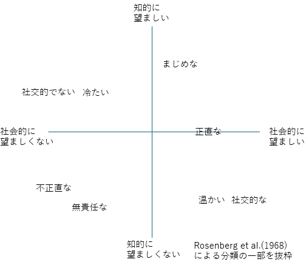
この説に基づけば, 対人認知の傾向を問うアンケートを行うには「社会的望ましさ」と「知的望ましさ」のどちらか一方でなく, 2 つの次元を持つ尺度が望ましいこととなります. このような概念構成の構造を知るには, 構成する因子 (上の例でいえば 2 つの望ましさ) を探索する必要があります. そのような複数の変数の中から少数の次元を探索する分析手法として因子分析があります. 10 項目の 7 段階であるリッカート尺度によるアンケートがあったとしたとき, このアンケートの 10 個の項目がすべて 1 つのことについて測定しているのであれば, ある項目への回答が中間の「4: どちらでもない」であったとき, ほかの回答も「4: どちらでもない」かそれに近い回答が選ばれる傾向がみられるはずです. そうなっていないなら, その質問は他のことについて尋ねている可能性が高いとみなされます. アンケートの 10 個の項目が複数の次元について訊ねるものであるとき, いくつかの項目がほかの項目とは関係なく, まとまって高く反応する, 反対に低く反応するなどのケースが見受けられます. このまとまった項目が共通して持つ部分を因子とみなします.
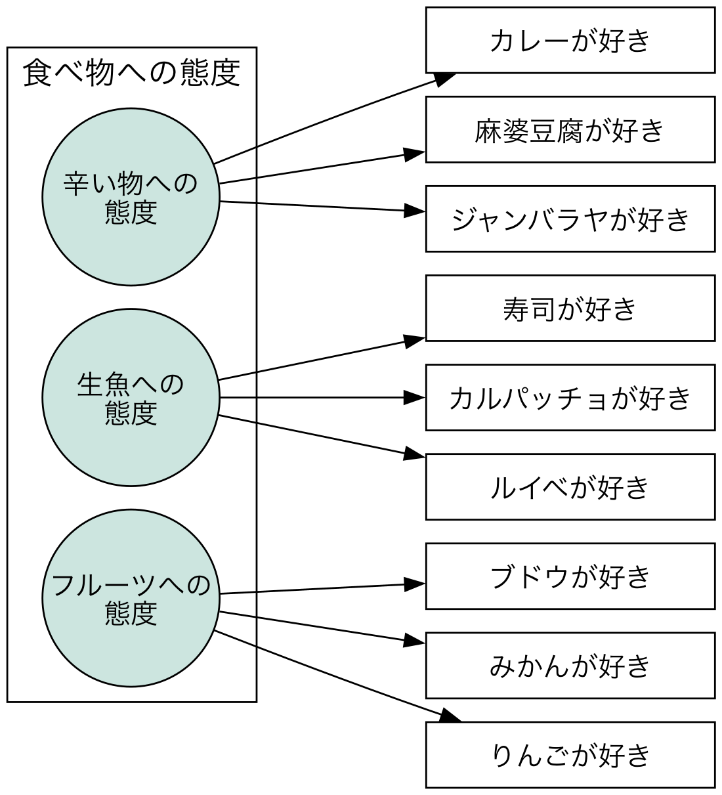
図では, 直接観測できない因子を丸, 質問項目を四角で表し, 因子から質問項目への矢印で「その因子が回答に影響する」ことを表しています.
因子分析では直接観測できる質問項目 (下位尺度) への反応から, 直接観測できない「食べ物への態度」を構成する因子を測定し, それによって全体の概念を説明します. 各質問項目が因子につながる共通の部分を持っているかどうかは, 質問項目間の相関係数から求められます. 質問項目によっては, 2 つ以上の因子にかかわることがあります. 例えば, わさびが寿司につきものであるなら, 多少は辛い物への態度が影響している可能性が考えられます. このようなケースでは, 下位尺度のグループ化において, 相関係数をもとに判断をする必要があります.
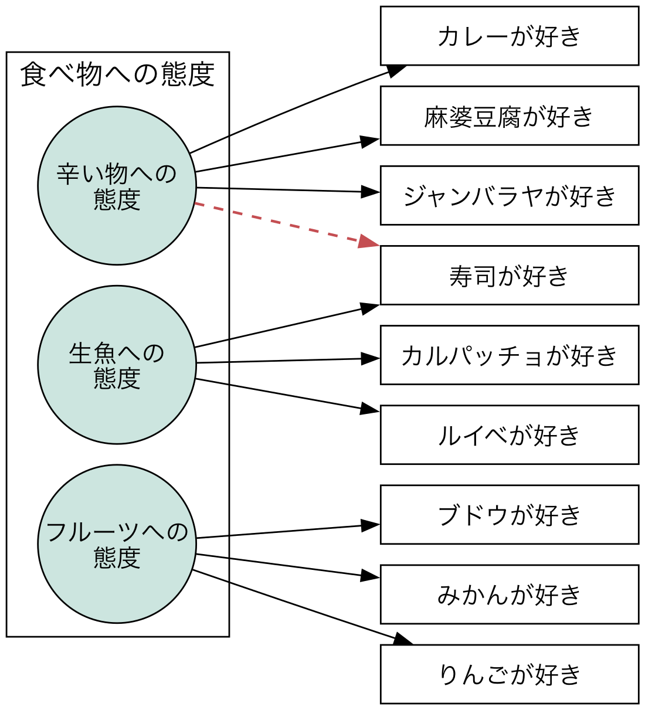
図の赤い破線の矢印は, 「寿司が好き」という項目が, 生魚への態度だけでなく辛い物への態度からも影響を受けている場合を表しています.
質問項目には, 尺度の全体に関わる部分があります. これを共通性といい, 逆に, 尺度に関わらない質問項目独自の要素を独自性と呼びます. 例えば寿司が好きという行動は尺度全体における「食べ物への態度」と高く関わっているかもしれません. この場合にはこれが共通性とみなされます. しかし寿司が好きな人の中には「形がかわいいから好き」など食べ物に直接かかわらない要素があるかもしれません. このような時, 寿司が好きかという質問項目には独自性があるといえます. 共通性と独自性は足して 1 になるようになっており, 共通性があまりに低い項目がある場合は共通因子を探るのに役に立たないことがあります. このような場合, その質問項目を除外して考えることもあります. 一方で, そのような質問項目から新しい因子が作成されたり, 回答者グループの属性に影響を受けているなど, データ全体の解釈において有用である場合もあるので慎重に考える必要があります.
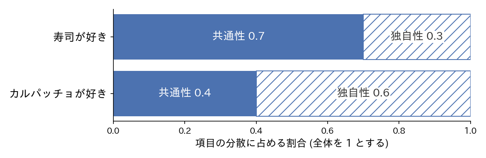
図は, 各項目の回答のばらつき (分散) を 1 としたときに, 共通性と独自性がそれぞれどれだけを占めるかを表したイメージです. 「寿司が好き」の方が「カルパッチョが好き」より共通性の割合が大きく, 食べ物への態度全体とより強く関わっている項目だといえます.
各項目が因子から受ける影響の強さを因子負荷量と呼び, これが大きい項目が因子を解釈する際の中心となります.
この授業では因子分析の手法そのもの (因子の数や項目のまとまりをデータから探す方法) は扱いませんが, 本章の最後の共分散構造分析で因子分析のモデルを使います. これらの概念は解釈に必要なので, 忘れたら戻ってきてください.
信頼性と妥当性
尺度は態度を測るためのものさしにあたるものです. よって, 測るたびに大きく数値が変わったり, 対象を測るのに十分な長さがないとなれば役に立ちません.
そのような尺度の有用度を判断する基準として信頼性があります. 信頼性は, 尺度の測定誤差について吟味することです. 一貫性の測定として, クロンバッハのα係数がよく用いられますが, ここでは深く扱いません. 興味のある方は調べるか, 教員に質問してみましょう.
作成者の意図通りに尺度を測定できているかを表す妥当性という概念もよく利用されます. 妥当性の判断としては, より詳細には基準関連妥当性, 内容的妥当性, 構成概念妥当性を吟味することが求められますが, これも詳細は割愛します.
質問紙の構成
測りたい態度について設定する
質問紙を構成する目的は, ある態度について類推することができる行動を計測することです. したがって, まずその態度について明確化する必要があります.
例えば「人の一生」のような巨大すぎる概念を対象にするのは相当無理があります. 「寝起き時の感情について」だとより限定されていて望ましいですが, 例えば少年と老人, 日本人と外国人では大きく異なるかもしれません. これらを比較することも一つの研究テーマとして面白いですが, まずは手におえる範囲までそれを訊ねる対象と扱う概念について小さくすることをおすすめします.
このようなときに重要なのは先行研究です. これまで研究されてこなかった概念を 1 から作るにしても, 類似の研究について追試するにあたっても, 先行研究から大きなヒントを得ることが近道となります. 先行研究の調べ方に関しては, 講義で別の機会に扱いますので, 参考にして先行研究を集めてみましょう.
概念の構造を考える
概念を構成する下位概念について, 事前にイメージすることも重要です. これらは, アンケートを回収した結果修正を要することもありますが, ひとまず質問項目をまんべんなくそろえるために重要なステップです.
概念の構造には多様な種類がありますが, やはり先行研究から自分の知りたい概念についてどのような構造が適当であるかを吟味する必要があります.
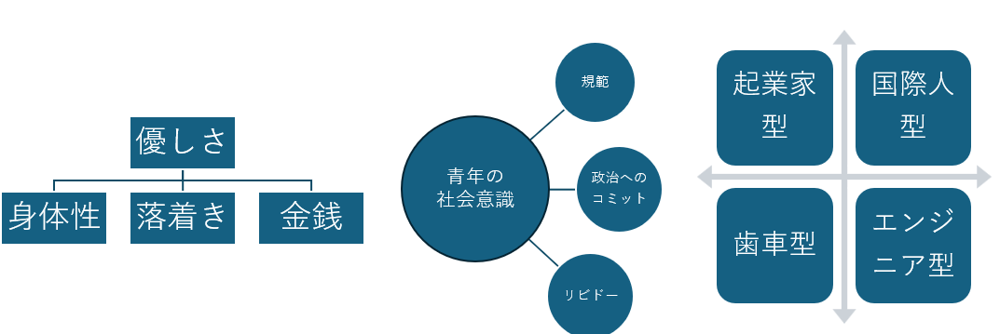
項目の作成
心理尺度の項で先駆けてリッカート法と SD 法については示しています. これらの方法は得点化して計算することを考慮したものですが, それ以外の方法でもデータを補強したり, 集めることができます. いくつかの方法に関して概観してみましょう.
順位法
順位法は提示された選択肢に順位をつけさせるものです. 例えば, 「カレー, ラーメン, とんかつの 3 つについて好きな順番をつけてください」のような質問項目が考えられます. この方法では, 順序尺度のデータを得ることができます.
多肢選択法
多肢選択法は質問項目について, 複数の回答選択をさせるものです. 「以下の中から, 好きな授業名を 1 つ選べ」という質問では 1 つしか回答が得られませんが, 「好きなだけ選べ」とすれば複数の情報が手に入ります. 十分に設計された選択肢があれば傾向を得ることができます.
自由記述法
自由記述法は質問に対して, 自由に文章を書かせる方法です. 構造化されたデータを手に入れることはできませんが, 見逃していた要素, 想像もしていない要素が情報として得られる可能性があります. カテゴリー分類や自然言語処理によって解釈に寄与するデータを得ることができるかもしれません. 自然言語処理に関しては第10章で扱っていますので, 参考にしてください.
項目作成の際の注意
いずれの方法でも, 質問項目の作成においては以下の点に注意を払う必要があります. それぞれの詳細に関しては, 実際に質問紙を構成する中で, 個別に解説しますので, 必要に応じて対応していきましょう.
項目が適切に構成概念を反映していること
項目がわかりやすいこと
回答を誘導しないこと
項目数が適切であること
選択肢が適切であること
逆転項目をいれるかどうか
回答者に社会通念上許されない負担を与えないこと
利用データ
本章では, 仮想のアンケートデータとして, 情報入門で利用されている理解度アンケートを利用します. なお, このアンケートの質問形式は実際に利用しているものですが, 回答は仮想のものであり, 得られた結果も実際の講義とは無関係です.
データはアンケートデータの CSVからダウンロードできます.
このデータは, Microsoft Forms で取得したアンケートデータになります. 自由回答や量的データを回答する質問項目はなく, 5 段階の順序尺度及び複数選択式の質問項目からなります.
質問項目は以下のとおりです.
- あなたの「スマートフォン」に対する印象について、どれくらいあてはまるかを教えてください。
- あなたの「スマートフォン」に対する操作や知識について、どれくらい自信があるかを教えてください。
- あなたの「パソコン」に対する印象について、どれくらいあてはまるかを教えてください。
- あなたの「パソコン」に対する操作や知識について、どれくらい自信があるかを教えてください。
- あなたの「SNS（FacebookやInstagramなど）」に対する印象について、どれくらいあてはまるかを教えてください。
- あなたの「SNS（FacebookやInstagramなど）」に対する操作や知識について、どれくらい自信があるかを教えてください。
- あなたの「ネットを使ったコミュニケーション（LINEやTwitterなど）」に対する印象について、どれくらいあてはまるかを教えてください。
- あなたの「ネットを使ったコミュニケーション（LINEやTwitterなど）」に対する操作や知識について、どれくらい自信があるかを教えてください。
- 次の「IT用語」について「知っている」という言葉にチェックをしてください（知っているものすべてにチェック）。
- Windowsの操作や事柄について「身に付いている」ものにチェックをしてください（身に付いているものすべてにチェック）。
- 電子メールの操作や事柄について「身に付いている」ものにチェックをしてください（身に付いているものすべてにチェック）。
- WWW(ウェブ)の操作や事柄について「身に付いている」ものにチェックをしてください（身に付いているものすべてにチェック）。
- Wordの操作や事柄について「身に付いている」ものにチェックをしてください（身に付いているものすべてにチェック）。
- Excelの操作や事柄について「身に付いている」ものにチェックをしてください（身に付いているものすべてにチェック）。
- PowerPointの操作や事柄について「身に付いている」ものにチェックをしてください（身に付いているものすべてにチェック）。
- Officeの応用的な操作や事柄について「身に付いている」ものにチェックをしてください（身に付いているものすべてにチェック）。
- 情報倫理について「身に付いている」ものにチェックをしてください（身に付いているものすべてにチェック）。
データ処理
Microsoft Forms によるデータは, 複数選択可能な質問項目への回答が一つのセルに「;」を用いて区切られて記入されるなどの特徴があります.
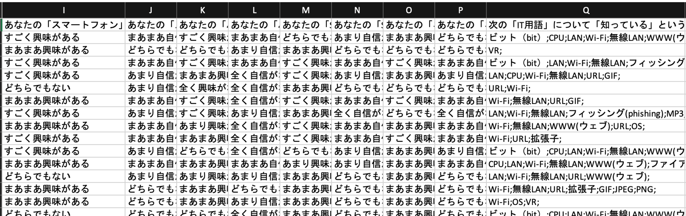
図は, データを表計算ソフトで開いたものの一部です. 列 I から P は 5 段階で答える選択式の質問で, 選んだ選択肢の文字列がそのまま入っています. 列 Q は複数選択式の質問で, 選んだ選択肢が「;」で区切られて 1 つのセルに入っています.
分析の際には, これらの情報を利用しやすいように変形する必要があります. ここでは, 練習も兼ねて一通りの処理を体験してみましょう.
本節の加工手順は本文のコードで再現できます. 内容を確認して自力でできると感じた方はこの節を飛ばしていただいて構いません.
まずはデータの形式を確認してみましょう.
import pandas as pd
import matplotlib.pyplot as plt
import matplotlib_fontja
import seaborn as sns
import scipy.stats as st
import numpy as np
#グラフの保存場所
dir_fig = './result/fig/'
#グラフの設定
plt.style.use('ggplot') #グラフスタイル
plt.rcParams['figure.figsize'] = [12, 9] #グラフサイズ
plt.rcParams['font.size'] = 14 #フォントサイズ
#------------------------------------------------------------------
#データの読み込み
#------------------------------------------------------------------
df = pd.read_csv('./data/questionnaire_sample_original.csv')
print(df.columns)
"""
Index(['あなたの「スマートフォン」に対する印象について、どれくらいあてはまるかを教えてください。',
'あなたの「スマートフォン」に対する操作や知識について、どれくらい自信があるかを教えてください。',
'あなたの「パソコン」に対する印象について、どれくらいあてはまるかを教えてください。',
'あなたの「パソコン」に対する操作や知識について、どれくらい自信があるかを教えてください。',
'あなたの「SNS（FacebookやInstagramなど）」に対する印象について、どれくらいあてはまるかを教えてください。',
'あなたの「SNS（FacebookやInstagramなど）」に対する操作や知識について、どれくらい自信があるかを教えてください。',
'あなたの「ネットを使ったコミュニケーション（LINEやTwitterなど）」に対する印象について、どれくらいあてはまるかを教えてください。',
'あなたの「ネットを使ったコミュニケーション（LINEやTwitterなど）」に対する操作や知識について、どれくらい自信があるかを教えてください。',
'次の「IT用語」について「知っている」という言葉にチェックをしてください（知っているものすべてにチェック）。',
'Windowsの操作や事柄について「身に付いている」ものにチェックをしてください（身に付いているものすべてにチェック）。',
'電子メールの操作や事柄について「身に付いている」ものにチェックをしてください（身に付いているものすべてにチェック）。',
'WWW(ウェブ)の操作や事柄について「身に付いている」ものにチェックをしてください（身に付いているものすべてにチェック）。',
'Wordの操作や事柄について「身に付いている」ものにチェックをしてください（身に付いているものすべてにチェック）。',
'Excelの操作や事柄について「身に付いている」ものにチェックをしてください（身に付いているものすべてにチェック）。',
'PowerPointの操作や事柄について「身に付いている」ものにチェックをしてください（身に付いているものすべてにチェック）。',
'Officeの応用的な操作や事柄について「身に付いている」ものにチェックをしてください（身に付いているものすべてにチェック）。',
'情報倫理について「身に付いている」ものにチェックをしてください（身に付いているものすべてにチェック）。'],
dtype='object')
"""このままでは列名が長すぎてプログラムが書きにくいので, 列名を順に Q1~Q17 の連番に変更します.
今回は辞書型で連番を作成するために, 組み込み関数の enumerate() を利用しています.
new_columns = dict([(t,'Q'+str(n + 1))for (n,t) in enumerate(df.columns)])
"""
一つ一つ手書きすると以下のようになる.
new_columns = {'あなたの「スマートフォン」に対する印象について、どれくらいあてはまるかを教えてください。':'Q1'
,'あなたの「スマートフォン」に対する操作や知識について、どれくらい自信があるかを教えてください。':'Q2'
,'あなたの「パソコン」に対する印象について、どれくらいあてはまるかを教えてください。':'Q3'
,'あなたの「パソコン」に対する操作や知識について、どれくらい自信があるかを教えてください。':'Q4'
,'あなたの「SNS（FacebookやInstagramなど）」に対する印象について、どれくらいあてはまるかを教えてください。':'Q5'
,'あなたの「SNS（FacebookやInstagramなど）」に対する操作や知識について、どれくらい自信があるかを教えてください。':'Q6'
,'あなたの「ネットを使ったコミュニケーション（LINEやTwitterなど）」に対する印象について、どれくらいあてはまるかを教えてください。':'Q7'
,'あなたの「ネットを使ったコミュニケーション（LINEやTwitterなど）」に対する操作や知識について、どれくらい自信があるかを教えてください。':'Q8'
,'次の「IT用語」について「知っている」という言葉にチェックをしてください（知っているものすべてにチェック）。':'Q9'
,'Windowsの操作や事柄について「身に付いている」ものにチェックをしてください（身に付いているものすべてにチェック）。':'Q10'
,'電子メールの操作や事柄について「身に付いている」ものにチェックをしてください（身に付いているものすべてにチェック）。':'Q11'
,'WWW(ウェブ)の操作や事柄について「身に付いている」ものにチェックをしてください（身に付いているものすべてにチェック）。':'Q12'
,'Wordの操作や事柄について「身に付いている」ものにチェックをしてください（身に付いているものすべてにチェック）。':'Q13'
,'Excelの操作や事柄について「身に付いている」ものにチェックをしてください（身に付いているものすべてにチェック）。':'Q14'
,'PowerPointの操作や事柄について「身に付いている」ものにチェックをしてください（身に付いているものすべてにチェック）。':'Q15'
,'Officeの応用的な操作や事柄について「身に付いている」ものにチェックをしてください（身に付いているものすべてにチェック）。':'Q16'
,'情報倫理について「身に付いている」ものにチェックをしてください（身に付いているものすべてにチェック）。':'Q17'}
"""
print(new_columns)
"""
{'あなたの「スマートフォン」に対する印象について、どれくらいあてはまるかを教えてください。': 'Q1'
, 'あなたの「スマートフォン」に対する操作や知識について、どれくらい自信があるかを教えてください。': 'Q2'
, 'あなたの「パソコン」に対する印象について、どれくらいあてはまるかを教えてください。': 'Q3'
, 'あなたの「パソコン」に対する操作や知識について、どれくらい自信があるかを教えてください。': 'Q4'
, 'あなたの「SNS（FacebookやInstagramなど）」に対する印象について、どれくらいあてはまるかを教えてください。': 'Q5'
, 'あなたの「SNS（FacebookやInstagramなど）」に対する操作や知識について、どれくらい自信があるかを教えてください。': 'Q6'
, 'あなたの「ネットを使ったコミュニケーション（LINEやTwitterなど）」に対する印象について、どれくらいあてはまるかを教えてください。': 'Q7'
, 'あなたの「ネットを使ったコミュニケーション（LINEやTwitterなど）」に対する操作や知識について、どれくらい自信があるかを教えてください。': 'Q8'
, '次の「IT用語」について「知っている」という言葉にチェックをしてください（知っているものすべてにチェック）。': 'Q9'
, 'Windowsの操作や事柄について「身に付いている」ものにチェックをしてください（身に付いているものすべてにチェック）。': 'Q10'
, '電子メールの操作や事柄について「身に付いている」ものにチェックをしてください（身に付いているものすべてにチェック）。': 'Q11'
, 'WWW(ウェブ)の操作や事柄について「身に付いている」ものにチェックをしてください（身に付いているものすべてにチェック）。': 'Q12'
, 'Wordの操作や事柄について「身に付いている」ものにチェックをしてください（身に付いているものすべてにチェック）。': 'Q13'
, 'Excelの操作や事柄について「身に付いている」ものにチェックをしてください（身に付いているものすべてにチェック）。': 'Q14'
, 'PowerPointの操作や事柄について「身に付いている」ものにチェックをしてください（身に付いているものすべてにチェック）。': 'Q15'
, 'Officeの応用的な操作や事柄について「身に付いている」ものにチェックをしてください（身に付いているものすべてにチェック）。': 'Q16'
, '情報倫理について「身に付いている」ものにチェックをしてください（身に付いているものすべてにチェック）。': 'Q17'}
"""
df.rename(new_columns, inplace=True,axis='columns')
print(df)
"""
Q1 Q2 Q3 ... Q15 Q16 Q17
0 まあまあ興味がある どちらでもない どちらでもない ... スライドマスターを活用することができる;SmartArtを挿入することができる; 学内PCで作成したファイルを自宅のPCに持ち運べる; どれも身についていない;
1 すごく興味がある まあまあ自信がある すごく興味がある ... 新しいスライドを追加することができる; 学術的文章の規則を踏まえてレポートを作成できる; 学内PCでログアウトせずに帰る危険性を理解している;マルウェア（不正ソフト）について理解して...
2 すごく興味がある あまり自信がない まあまあ興味がある ... どれも身についていない; どれも身に付いていない; どれも身についていない;
3 どちらでもない あまり自信がない 全く興味がない ... 新しいスライドを追加することができる; どれも身に付いていない; 学内PCでログアウトせずに帰る危険性を理解している;
4 まあまあ興味がある まあまあ自信がある すごく興味がある ... 新しいスライドを追加することができる; どれも身に付いていない; どれも身についていない;
... ... ... ... ... ... ... ...
1347 まあまあ興味がある あまり自信がない まあまあ興味がある ... 新しいスライドを追加することができる;スライドにページ番号を挿入することができる;スライドマ... どれも身に付いていない; 学内PCでログアウトせずに帰る危険性を理解している;フィッシング詐欺について理解している;ウ...
1348 まあまあ興味がある あまり自信がない まあまあ興味がある ... 新しいスライドを追加することができる; どれも身に付いていない; 学内PCでログアウトせずに帰る危険性を理解している;
1349 まあまあ興味がある 全く自信がない 全く興味がない ... 新しいスライドを追加することができる; どれも身に付いていない; どれも身についていない;
1350 まあまあ興味がある まあまあ自信がある まあまあ興味がある ... アニメーション機能を使うことができる;新しいスライドを追加することができる; どれも身に付いていない; 学内PCでログアウトせずに帰る危険性を理解している;ウェブ上の画像に関する著作権について理解...
1351 まあまあ興味がある あまり自信がない まあまあ興味がある ... 新しいスライドを追加することができる;スライドにページ番号を挿入することができる; どれも身に付いていない; フィッシング詐欺について理解している;ウェブ上の画像に関する著作権について理解している;学内...
"""続いて, 質問項目を利用しやすいように変換します. このアンケートでは, Q1~Q8 では, IT に関連する事柄に関する興味の強さと自信を 5 段階評価で聞いています. そのままでも使えますが, 後の処理のために整数に変換します.
もとの列も残しておくために, 数値変換した列は QX_num の形で新しい列を作成しています.
kyomi = {'すごく興味がある':5
,'まあまあ興味がある':4
,'どちらでもない':3
,'あまり興味がない':2
,'全く興味がない':1}
zishin = {'すごく自信がある':5
,'まあまあ自信がある':4
,'どちらでもない':3
,'あまり自信がない':2
,'全く自信がない':1}
for i in [1,3,5,7]:
df['Q' + str(i) + '_num'] = df['Q' + str(i)].apply(lambda x : kyomi[x])
for i in [2,4,6,8]:
df['Q' + str(i) + '_num'] = df['Q' + str(i)].apply(lambda x : zishin[x])Q9~Q17 では, 身についているスキルを複数選択形式で尋ねています. 複数選択された項目は, セミコロン (;) で区切られています. 各質問項目で選択されたスキルの数に変換してみます. なお, 「どれも身についていない」にあたる回答は, 質問によって「どれも身に付いていない」「どれもしらない」と表記が揺れています. 表記を 1 つに決め打ちすると, 揺れた表記の回答が 1 個と数えられるので, 「どれも」で始まる回答をまとめて 0 個として扱います.
#｢身についているもの｣の数の列を作る
#------------------------------------------------------------------
def to_list(x):
# ';'で区切ったリストにする
# 'どれも' で始まる回答 ('どれも身についていない' など) がある場合は空のリストを返す
xs = x.split(';')[0:-1]
if any(t.startswith('どれも') for t in xs):
return []
else:
return xs
#テスト
print(df.at[100,'Q13'])
print(to_list(df.at[100,'Q13']))
# >>> フォントの種類やサイズを変更することができる;中央揃えや右揃えを設定することができる;
# >>> ['フォントの種類やサイズを変更することができる', '中央揃えや右揃えを設定することができる']
for i in range(9,18,1):
df['Q' + str(i) + '_num'] = df['Q' + str(i)].apply(lambda x : len(to_list(x)))
print(df['Q17_num'])
"""
0 0
1 3
2 0
3 1
4 0
..
1347 3
1348 1
1349 0
1350 2
1351 3
Name: Q17_num, Length: 1352, dtype: int64
"""
num_columns = ['Q' + str(x) + '_num' for x in range(1,18,1)]
print(num_columns)
"""
['Q1_num', 'Q2_num', 'Q3_num', 'Q4_num', 'Q5_num', 'Q6_num', 'Q7_num', 'Q8_num', 'Q9_num', 'Q10_num', 'Q11_num', 'Q12_num', 'Q13_num', 'Q14_num', 'Q15_num', 'Q16_num', 'Q17_num']
"""ヒストグラム
続いてデータ分析のファーストステップであるヒストグラムを作成して個別の質問項目ごとのデータの特徴をみてみましょう. ヒストグラムの作成方法などに関しては, 第3章を参照してください.
#ヒストグラムを作る
#------------------------------------------------------------------
## Q1~Q6
fig, ax = plt.subplots(nrows = 6
,ncols = 1
,tight_layout=True)
for i in range(6):
col = 'Q' + str(i + 1) + '_num'
xs = df[col].value_counts().sort_index()
ax[i].bar(xs.index,xs.values, width = 1)
ax[i].set_title(col)
plt.savefig(dir_fig + 'Q1_6_histgram.png')
plt.close(fig)
##Q7~Q12
fig, ax = plt.subplots(nrows = 6
,ncols = 1
,tight_layout=True)
for i in range(6):
col = 'Q' + str(i + 7) + '_num'
xs = df[col].value_counts().sort_index()
ax[i].bar(xs.index,xs.values, width = 1)
ax[i].set_title(col)
plt.savefig(dir_fig + 'Q7_12_histgram.png')
plt.close(fig)
##Q13~Q17
fig, ax = plt.subplots(nrows = 5
,ncols = 1
,tight_layout=True)
for i in range(5):
col = 'Q' + str(i + 13) + '_num'
xs = df[col].value_counts().sort_index()
ax[i].bar(xs.index,xs.values, width = 1)
ax[i].set_title(col)
plt.savefig(dir_fig + 'Q13_17_histgram.png')
plt.close(fig)以下のようなグラフが最初に設定したグラフの保存場所 ./result/fig に保存されているはずです. 図は Q1 から Q6 のヒストグラムです.
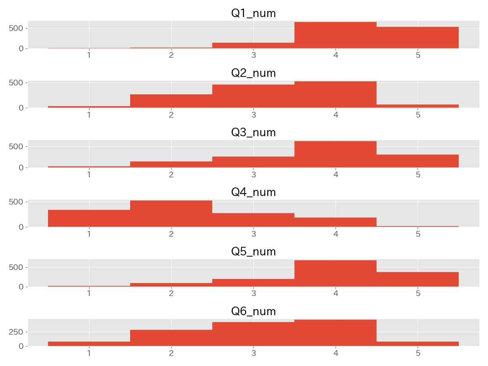
ここでは, ヒストグラムの分析の仕方については細かく扱いませんが, 多くの示唆が得られます. 例えば, 興味を尋ねた Q1 (スマートフォン), Q3 (パソコン), Q5 (SNS) は, いずれも 4 (まあまあ興味がある) 以上に回答が集まっています. 自信を尋ねた質問では, Q2 (スマートフォン) と Q6 (SNS) が 3 から 4 に集まるのに対し, Q4 (パソコン) は 1 (全く自信がない) と 2 (あまり自信がない) に集まっています. パソコンには興味を持つ学生が多い一方で, 自信を持つ学生は少ないことが分かります.
相関係数
ヒストグラムで質問項目ごとのデータの特徴を把握したので, 相関係数を求めて, データ間の関係性を可視化してみましょう. 今回のデータは順序尺度なので, スピアマンの順位相関係数を利用します. 相関に関する説明は, 第4章を参照してください.
#順位相関係数を求める
#------------------------------------------------------------------
sns.heatmap(df[num_columns].corr(method='spearman')
,cmap=plt.get_cmap('bwr')
,vmax=1.0
,center =0
,vmin=-1.0
,xticklabels=1
,yticklabels=1
,linewidths=.5
,annot=True)
plt.title('spearman')
plt.xticks(rotation=45)
plt.savefig(dir_fig + 'spearman.png')
plt.close()以下のような相関係数のヒートマップが作成されます. 細かな分析は行いませんが, Q1~Q8 までの興味関心に関する質問項目間, Q9~Q17 のスキルに関する質問間の相関が強いことなどが視覚的に表現されています.
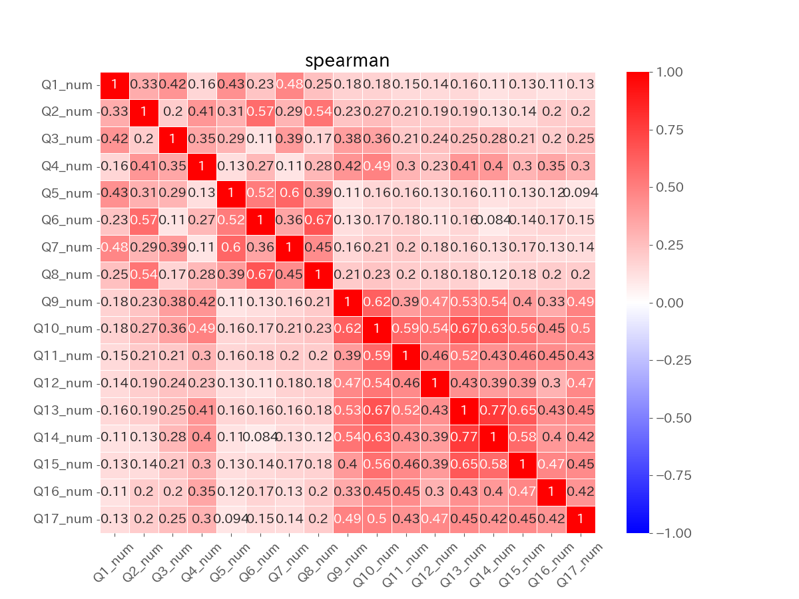
この相関係数は, 後に行う共分散構造分析 (SEM) におけるモデル作成のためにも利用されます.
同時度数分布表
相関係数によって相関が高い質問項目の組み合わせがいくつか把握されましたが, これは質問項目全体の関係性です. 解釈を行うには, 相関係数の高い質問項目の組み合わせごとに更に詳細に, どの回答とどの回答がどのような関係にあるのか, といった分析が必要になります. 質的データについてそのような分析に利用できるのが同時度数分布表です. 詳細は第3章を参照してください.
#クロス表
#------------------------------------------------------------------
#質問項目の区分間にどのような関係があるのかを検定する
#今回はスマホの自信(Q2)と,PCの自信(Q4)だけ(自分の仮説に応じて色々ためす)
# 作業手順
## クロス表を作成する
## 独立性の検定(お互いに影響があるか)を検定する
## 検定が有意であれば,どの項目が具体的にどの項目に影響しているかを残差分析で明らかにする.
#クロス表の作成
## 列と行に指定する質問項目
target_row = 'Q4'
target_col = 'Q2'
## 選択肢の順序(指定しないとデータの出てきた順になる)
order = {target_row:['すごく自信がある'
,'まあまあ自信がある'
,'どちらでもない'
,'あまり自信がない'
,'全く自信がない']
,target_col:['すごく自信がある'
,'まあまあ自信がある'
,'どちらでもない'
,'あまり自信がない'
,'全く自信がない']}
## 図の軸に表示する質問の内容
labels = {'Q2':'スマートフォンへの自信 (Q2)'
,'Q4':'パソコンへの自信 (Q4)'}
crosstab = pd.crosstab(df[target_row],df[target_col])
crosstab = crosstab.reindex(order[target_row],axis='index')
crosstab = crosstab.reindex(order[target_col],axis='columns')
sns.heatmap( crosstab
, cmap=plt.get_cmap('Reds')
, yticklabels=1
, xticklabels=1
, linewidths=.5
, annot=True
, fmt='d')
plt.title('同時度数分布表 (人数)')
plt.ylabel(labels[target_row])
plt.xlabel(labels[target_col])
plt.xticks(rotation=30)
plt.tight_layout()
plt.savefig(dir_fig + 'cross_table_'+ target_row + '_' + target_col +'.png')
plt.close()作成された度数分布表を確認すると, 表の左上から右下への対角線の付近に度数が集まっています. 行 (Q4, パソコンへの自信) と列 (Q2, スマートフォンへの自信) はどちらも自信の強い順に並んでいるので, この偏りは, スマートフォンに自信がある学生ほどパソコンにも自信があるという傾向を表しています. また, パソコンは「あまり自信がない」と「全く自信がない」に, スマートフォンは「まあまあ自信がある」と「どちらでもない」に回答が多く, パソコンに自信がない学生の方が多いことも分かります. 今回は一つの組み合わせに注目しましたが, 分析の目的や仮説に応じて, 様々な組み合わせについて分析してみましょう.
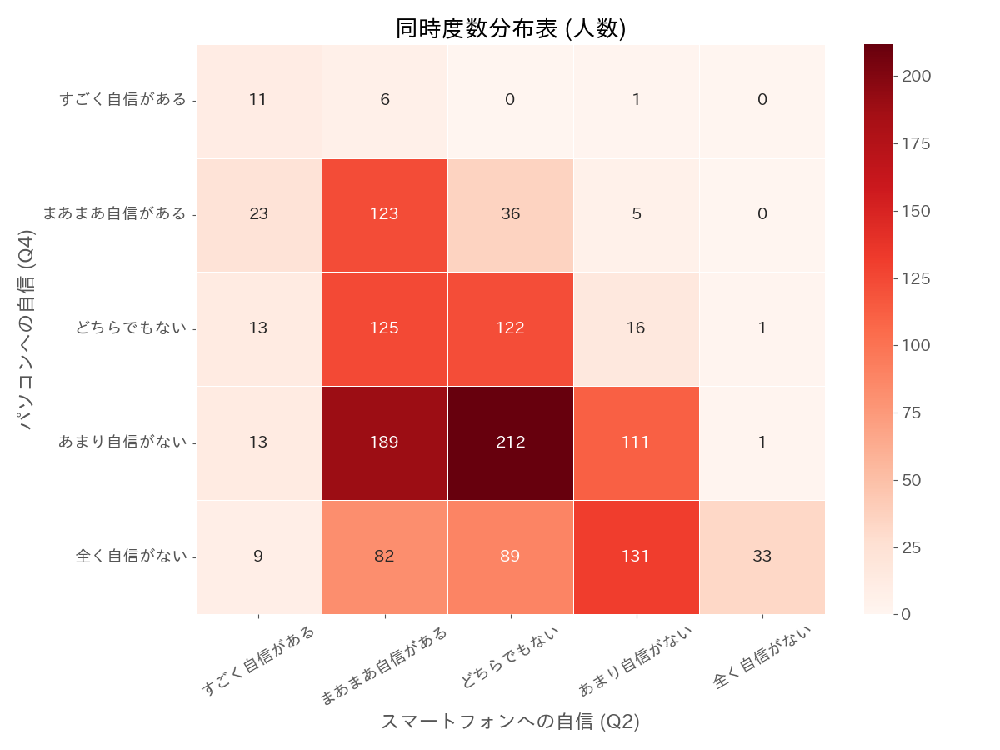
独立性の検定
同時度数分布表によって, 質問項目間の細かな関係性が分析されましたが, 実際に 2 つの変数間に関係があるとは判断できていません. そのような判断のためには, 検定を行う必要がありますが, 質的データの場合にしばしば用いられるのが, 独立性の検定 (カイ二乗検定) です. 詳細は第4章を参照してください.
#独立性の検定
x2, p, dof, e = st.chi2_contingency(crosstab,correction=False)
print(p)
# >>> 2.2871064452593352e-84
if p <= 0.05:
print('有意')
else:
print('有意でない')
# >>> 有意残差分析
2 つの質問項目間に期待値に対する偏りがあることが分かりました. 偏りが確認された場合には, 相関係数の場合と同様に, 質問項目のどの回答同士が偏っているのかを把握するためには残差分析が利用できます. 各セルの観測度数と期待度数の差を標準化した標準化残差を計算し, その絶対値がおよそ 2 (1.96) を超えるセルに偏りがあるとみます. 残差分析の理論の詳細は「データ活用の統計学実践」で扱います.
#有意であれば,残差分析を行う
##期待値表の計算
expect = pd.DataFrame(e)
expect.columns = crosstab.columns
expect.index = crosstab.index
#残差の計算
residual = crosstab - expect
#標準化残差の計算
col_sum = crosstab.sum()
row_sum = crosstab.transpose().sum()
total = col_sum.sum()
stdres = residual.copy()
for c in stdres.columns:
for r in stdres.index:
stdres.at[r,c] = stdres.at[r,c] \
/ np.sqrt( expect.at[r,c]
* (1 - col_sum[c] / total)
* (1 - row_sum[r] / total))
#ヒートマップの作成
## 色の範囲は絶対値の最大に合わせ, 絶対値が 1.96 を超えるセルに * を付ける
lim = np.abs(stdres.values).max()
annot = stdres.apply(lambda col: col.map(lambda v: f'{v:.1f}' + ('*' if abs(v) > 1.96 else '')))
sns.heatmap(stdres
,cmap=plt.get_cmap('RdBu_r')
,vmax=lim
,vmin=-lim
,center=0
,xticklabels=1
,linewidths=.5
,annot=annot
,fmt='')
plt.title('標準化残差 (* は絶対値が 1.96 を超えるセル)')
plt.ylabel(labels[target_row])
plt.xlabel(labels[target_col])
plt.xticks(rotation=30)
plt.tight_layout()
plt.savefig(dir_fig + 'stdres_' + target_row + '_' + target_col + '.png')
plt.close()作成された標準化残差を確認すると, 対角線上のセル (2 つの質問に同じ程度の自信を答えた組み合わせ) の多くが正の大きな値になっています. 例えば, 両方に「すごく自信がある」と答えた組み合わせは 10.9, 両方に「全く自信がない」と答えた組み合わせは 9.5 です. 反対に, 対角線から離れたセルは負の値になっています. 標準化残差の絶対値が 1.96 を超えるセルは, 5% 水準で期待度数から有意に偏っていると判断でき, 図では値に「」を付けています. 「」の付いていないセル (例えば, パソコンに「あまり自信がない」, スマートフォンに「あまり自信がない」の 1.2) は, 期待度数との差が偶然の範囲を超えるとはいえません. したがって, スマートフォンに自信がある学生ほどパソコンにも自信があるという偏りが, 統計的に確かめられました.
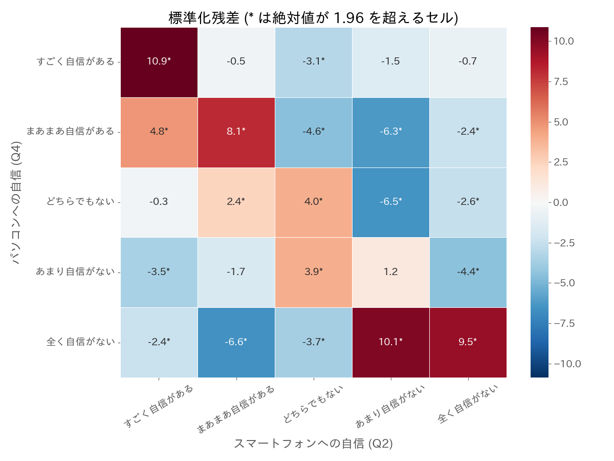
次元削減
これまでは一つ一つの質問項目及び質問項目間の関係に注目してきましたが, いくつかの質問項目をまとめてどのような関係があるのか, あるいは全体の質問をまとめてどのようなことが言えるのかという着眼点もあります. そのような場合に使える手法の一つが, 次元削減です. 次元削減は, 多数の変数がある場合にいくつかの変数を要約した一つの合成変数を作成する手法になります.
例えば, 以下のような各科目の成績データを考えた場合に, 個別の科目の成績を見ると, 国語は高いが, 数学は低い人と社会は高いが, 英語は低い人のどちらが学力が高いのかというような判断は困難です.
| id | 国語 (x₁) | 英語 (x₂) | 社会 (x₃) | 物理 (x₄) | 化学 (x₅) | 数学 (x₆) |
|---|---|---|---|---|---|---|
| 1 | 78 | 80 | 49 | 76 | 70 | 35 |
| 2 | 66 | 90 | 68 | 47 | 60 | 55 |
| 3 | 55 | 89 | 90 | 88 | 82 | 78 |
| … | … | … | … | … | … | … |
そこで, 以下のように文系の科目をまとめた文系力やすべての科目を合成した総合学力のような変数を作成することで全体的な傾向が判断できます. z_1 = \beta_{11}u_1 + \beta_{12}u_2 + \beta_{13}u_3 + \beta_{14}u_4 + \beta_{15}u_5 + \beta_{16}u_6 \implies 総合学力 z_2 = \beta_{21}u_1 + \beta_{22}u_2 + \beta_{23}u_3 \implies 文系力 z_3 = \beta_{34}u_4 + \beta_{35}u_5 + \beta_{36}u_6 \implies 理系力
ここで, u_i は x_i を標準化したものです.
このようにそれぞれの点数をまとめて, 要約した変数に変換することで, 文系力が高いグループを文系に分類するなど全体的な解釈を行うことが可能になります. 変数の要約は, 上のように回帰式を用いて分析者が独自に設計することも可能ですが, まとめる前の情報をできるだけ損なわずに自動的に合成変数を作成する次元削減手法を利用することが一般的です.
次元削減手法にはいくつかありますが, ここでは代表的な手法である主成分分析 (Principal component analysis) を利用してみましょう.
- 主成分分析 (PCA; Principal component analysis)
主成分分析は, 多数の変数の持つ情報を損なわずに圧縮する技術 (次元削減) であり, 予測モデル構築の前処理としてもよく使われます. 主成分分析では, 主成分の分散が最大になる軸 (主成分) を探しその軸に直交する軸の中で分散が最大になる主成分を順に探していく手法です. 最も分散の大きい主成分を第 1 主成分, 次に大きいものを第 2 主成分といい, 以下順に数字が増えていきます.
通常は人間が把握できない多次元 (多変数) を要約するために利用されますが, ここでは理解のために, 二次元の場合のイメージを考えてみましょう.
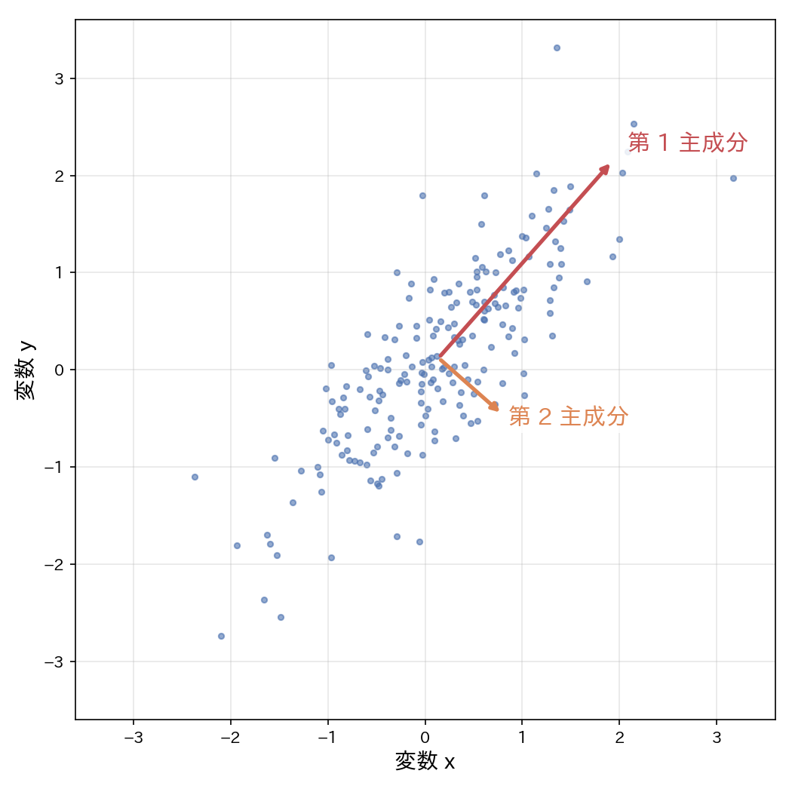
図の点は 2 つの変数 x, y の値です. 赤い矢印が, 点のばらつき (分散) が最も大きい方向 (第 1 主成分) で, オレンジの矢印がそれに直交する方向 (第 2 主成分) です.
第 1 主成分を軸としてみると, 第 2 主成分の情報は失われますが, 情報の損失が最も少なく 2 次元から 1 次元に情報を圧縮できます. これは, [x,y] を \theta だけ回転させて, [x,y][cos(\theta),sin(\theta)]^t を計算していることになります.
ここでは, アンケートデータの興味に関する質問 Q1,Q3,Q5,Q7, 自信に関する質問 Q2,Q4,Q6,Q8, 知識に関する質問 Q9~Q17 をそれぞれ要約して合成変数を作成してみます.
#次元削減
#------------------------------------------------------------------
#興味,自信,知識を統合して3変数にする
interest = df[['Q' + str(x) + '_num' for x in [1,3,5,7]]]
confidence = df[['Q' + str(x) + '_num' for x in [2,4,6,8]]]
knowledge = df[['Q' + str(x) + '_num' for x in range(9,18,1)]]
"""
#普通に平均値を出して,正規化するパターン
def min_max_scaling(x):
return (x - x.min())/(x.max() - x.min())
interest = min_max_scaling(interest.mean(axis=1))
confidence = min_max_scaling(confidence.mean(axis=1))
knowledge = min_max_scaling(knowledge.mean(axis=1))
print(interest)
"""
#PCAやt-sneでやってみるパターン(ただし,解釈が難しい)
from sklearn.decomposition import PCA
pca = PCA()
pca.fit(interest)
interest = pca.transform(interest)[:,0]
print('interest:', pca.explained_variance_ratio_[0])
pca.fit(confidence)
confidence = pca.transform(confidence)[:,0]
print('confidence:', pca.explained_variance_ratio_[0])
pca.fit(knowledge)
knowledge = pca.transform(knowledge)[:,0]
print('knowledge:', pca.explained_variance_ratio_[0])
#図示してみる
## interest-confidence
plt.scatter(y=interest,x=confidence)
plt.title('interest-confidence')
plt.ylabel('interest')
plt.xlabel('confidence')
plt.savefig(dir_fig + 'interest-confidence.png')
plt.close()
## interest-knowledge
plt.scatter(y=interest,x=knowledge)
plt.title('interest-knowledge')
plt.ylabel('interest')
plt.xlabel('knowledge')
plt.savefig(dir_fig + 'interest-knowledge.png')
plt.close()
## confidence-knowledge
plt.scatter(y=confidence,x=knowledge)
plt.title('confidence-knowledge')
plt.ylabel('confidence')
plt.xlabel('knowledge')
plt.savefig(dir_fig + 'confidence-knowledge.png')
plt.close()
##3変数
fig = plt.figure()
ax = fig.add_subplot(projection='3d')
ax.scatter(interest,confidence,knowledge)
plt.savefig(dir_fig + 'pca3d.png')
plt.close(fig)
#それぞれの相関係数を確認する
df['interest'] = interest
df['confidence'] = confidence
df['knowledge'] = knowledge
sns.heatmap(df[['interest','confidence','knowledge']].corr(method='spearman')
,cmap=plt.get_cmap('bwr')
,vmax=1.0
,center =0
,vmin=-1.0
,xticklabels=1
,yticklabels=1
,linewidths=.5
,annot=True)
plt.title('pca_spearman')
plt.xticks(rotation=45)
plt.savefig(dir_fig + 'pca_spearman.png')
plt.close()
#このあとクラスタリングしてみることで,学生の分類ができるかもしれない
#(けど今回はやらない)PCA による合成変数の関係を散布図で確認し, それぞれの合成変数間の関係性を見てみることで個別にはわからなかった特徴が見えることがあります. 今回は, これ以上は扱いませんが, 可視化によって特徴が見えた場合にはこのあと作成した変数を利用した解析, クラスタリングなどでデータの解釈を進めることになります.
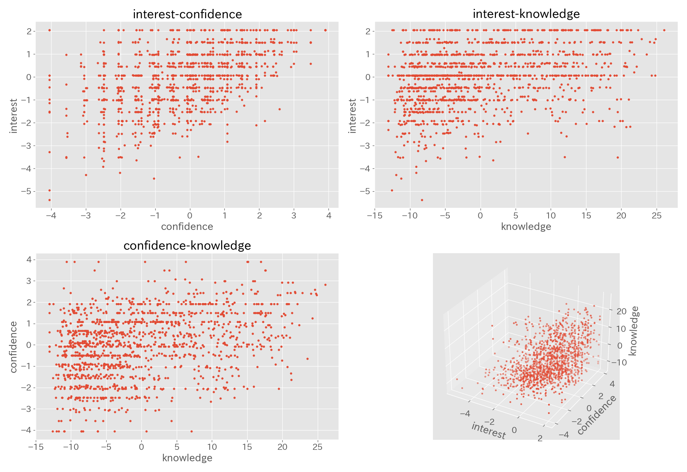
散布図を見ると, 3 つの合成変数のどの組み合わせでも, はっきりとしたまとまり (クラスタ) は見られません. このような場合でも, t-SNE など別の次元削減手法を試すと結果が変わることがあります.
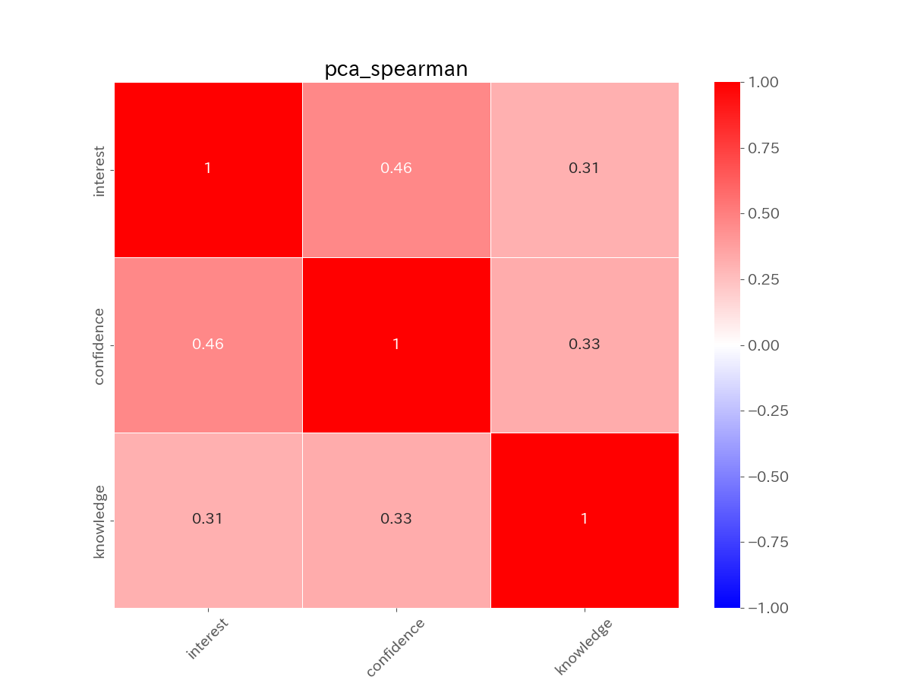
合成変数どうしの相関係数は, 興味と自信が 0.46, 興味と知識が 0.31, 自信と知識が 0.33 で, 中程度から弱い正の相関です. なお, 主成分の向き (符号) は計算の都合で決まるので, 実行する環境によっては相関係数の符号が反転することがあります.
共分散構造分析
これまでに残差分析などで 2 変数間の関係を確かめてきました. しかし, アンケート調査のように項目が多い場合には, 多数の変数の間の関係をまとめて調べたいことがあります. そのような場合に利用できるのが共分散構造分析 (SEM; Covariance Structure Analysis, Structural Equation Modeling) です. SEM は社会科学, 心理学, マーケティング, 教育研究などの分野でよく用いられます.
相関係数は 2 つの変数の関係を対等に測りますが, SEM では, どの変数がどの変数に影響するかという向きを分析者が仮説として決め, 変数間の関係を式の集まり (モデル) として書き下します. そのうえで, モデルがデータと矛盾しないかを確かめます. 分析の前に理論や仮説からモデルを組み立てる必要があることが, SEM を使う際の難しさです.
SEM は, 因子分析のモデルと回帰分析のモデルを 1 つにまとめたものです. 以下では, 2 つのモデルの式, 2 つを合わせたモデルが共分散について何を予言するか, 予言とデータの食い違いの評価の仕方, の順に説明し, 最後にアンケートデータで実践します.
因子分析のモデル
学生ごとの「100M 走のタイム」と「走り幅跳びの飛距離」には, データとして観測されていない「脚力」という共通の要因が影響していると考えられます. このような観測されない共通の要因を潜在変数 (因子) と呼び, 直接測定される変数を観測変数と呼びます. 本章の前半の因子 (潜在変数)で説明した因子は, この潜在変数のことです.
| ID | 100M | 走り幅跳び | 遠投 | 懸垂 |
|---|---|---|---|---|
| 1 | 14.5 | 2.2 | 20 | 12 |
| 2 | 15.2 | 1.7 | 18 | 7 |
| … | … | … | … | … |
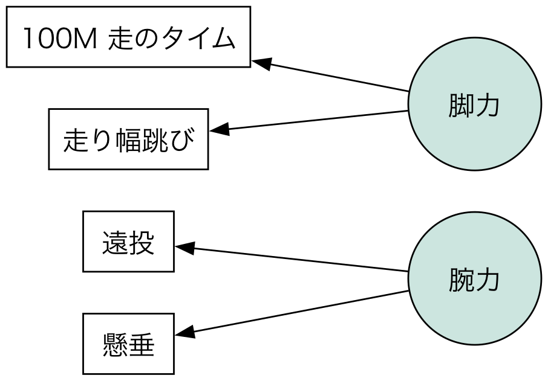
図では, 観測変数を四角, 潜在変数を丸で表しています. 矢印は, 潜在変数が観測変数の値に影響するという仮定を表します.
因子分析では, 観測変数の値が潜在変数から生み出されると考えて, 観測変数ごとに次のような式を立てます. 定数 (切片) は分散や共分散に影響しないので, ここでは各変数の平均からのずれを考えて切片を省略します.
\begin{aligned} x_1 &= \lambda_1 f + \varepsilon_1 \quad (\text{100M 走のタイム}) \\ x_2 &= \lambda_2 f + \varepsilon_2 \quad (\text{走り幅跳びの飛距離}) \end{aligned}
- f: 潜在変数 (脚力) です. 学生ごとに値を持ちますが, 観測できません.
- \lambda_i (ラムダ): 因子負荷量です. 潜在変数が 1 増えたときに, 観測変数がどれだけ変わるかを表します. 100M 走はタイムなので, 脚力が高いほど値が小さくなり, \lambda_1 は負になると予想されます.
- \varepsilon_i (イプシロン): 独自因子です. その項目にだけ影響する要因と測定誤差をまとめたもので, 独自因子どうし, および独自因子と潜在変数は無相関だと仮定します.
この式は, 観測変数 x_i を潜在変数 f で回帰した式と同じ形です. 因子負荷量 \lambda_i は回帰係数に, 独自因子 \varepsilon_i は誤差項にあたります. 通常の回帰分析との違いは, 説明変数 f が観測できない点です.
式の向きに注意してください. 因子分析では潜在変数が観測変数を生み出すので, 式の左辺は観測変数で, 図の矢印は潜在変数から観測変数へ向かいます. 次元削減で扱った主成分分析はこれとは逆に, 観測変数に重みをかけて足し合わせ, 合成変数を作ります.
観測変数を標準化し, 潜在変数の分散を 1 とすると, 観測変数の分散 1 は, 潜在変数に由来する部分 \lambda_i^2 と独自因子の分散に分かれます. \lambda_i^2 が本章の前半で説明した共通性, 独自因子の分散が独自性にあたり, 両者を足すと 1 になります.
回帰分析のモデル
次に, 脚力と腕力がバスケットボールの得点にどう影響するかを考えます. これは第5章の重回帰分析と同じ形の式で表せます.
y = \beta_1 f_1 + \beta_2 f_2 + \beta_3 x_5 + \varepsilon_y
ここで, y はバスケットボールの得点, f_1 と f_2 は脚力と腕力 (潜在変数), x_5 は身長 (観測変数) です. \beta_j はパス係数と呼ばれ, 重回帰分析の偏回帰係数と同じく, 他の説明変数を一定にしたときの影響の大きさを表します. \varepsilon_y は説明変数で説明できない部分で, 回帰分析の誤差項にあたり, 説明変数とは無相関だと仮定します. 重回帰分析との違いは, 説明変数と目的変数に潜在変数を使える点です.
測定モデルと構造モデル
SEM のモデルは, 次の 2 つの部分からなります.
- 測定モデル: 潜在変数と観測変数の関係です. 因子分析のモデルにあたります.
- 構造モデル: 変数どうしの影響の仮説です. 回帰分析のモデルにあたり, 潜在変数と観測変数のどちらも使えます.
「SEM は回帰分析と因子分析を同時に行う」とは, この 2 つの部分に含まれる係数をすべて, 1 つの基準でまとめて推定するという意味です.
先に 100M 走と走り幅跳びの値を標準化し, 100M 走は符号を反転して向きを揃えてから平均し (本章の次元削減で作った合成変数と同じ考え方です), それを脚力とみなして回帰分析をしても, SEM と同じ結果にはなりません. 合成した値には独自因子 (測定誤差) が混ざっており, 誤差を含む変数を説明変数にすると係数が偏って推定されるからです. 説明変数が 1 つで, 測定誤差が真の値や目的変数の誤差と無相関なら, 係数は真の値を使った場合より 0 に近くなります. 説明変数が複数あると, 偏りの向きは一定ではありません. SEM は潜在変数どうしの関係を直接推定するので, モデルが正しければ, 測定誤差を分けて取り除いた係数が得られます.
モデルの全体像を図にしたものをパス図といいます. パス図は次の約束で描きます.
- 四角は観測変数, 大きな丸は潜在変数を表します.
- 片方向の矢印は, 矢印の元の変数が先の変数に影響するという仮説を表し, 因子負荷量かパス係数が付きます.
- 両方向の矢印は, 向きを仮定しない関係 (共分散) を表します. 下の図の \phi_{12} (ファイ) は脚力と腕力の共分散です.
- 小さな丸は独自因子と誤差 (\varepsilon) を表します.
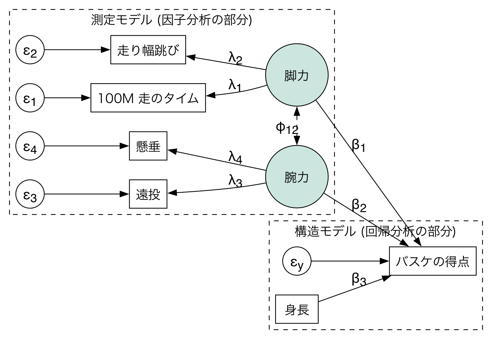
記号について
本章では, 第5章の回帰分析と読み比べやすいように, 回帰係数を \beta, 誤差を \varepsilon で表しています. SEM の専門書や論文では, 次のように役割ごとに別の文字を使う記法 (開発されたソフトウェアの名前から LISREL 記法と呼ばれます) がよく使われます.
| 本章の記号 | よく使われる記号 | 意味 |
|---|---|---|
| f | \xi (グザイ), \eta (イータ) | 潜在変数 (説明する側が \xi, 説明される側が \eta) |
| \lambda | \lambda (ラムダ) | 因子負荷量 |
| \beta | \gamma (ガンマ), \beta (ベータ) | パス係数 (\xi から \eta へは \gamma, \eta どうしは \beta) |
| 観測変数の \varepsilon_i | \delta (デルタ), \varepsilon (イプシロン) | 独自因子 (測定誤差) |
| 構造モデルの \varepsilon | \zeta (ゼータ) | 構造モデルの誤差 |
| \phi, \psi_i | \Phi, \Theta | 潜在変数の分散と共分散, 独自因子の分散 |
SEM を利用するには, 分析の前にこのようなパス図を仮説として描く必要があります. 推定すると, 矢印ごとに係数とその p 値が求まり, 仮説の各部分の影響の大きさと有意性がわかります.
モデルが予言する共分散行列
SEM がモデルをデータとどう照らし合わせるのかを, 1 つの因子と 4 つの観測変数からなる小さなモデルで確かめます.
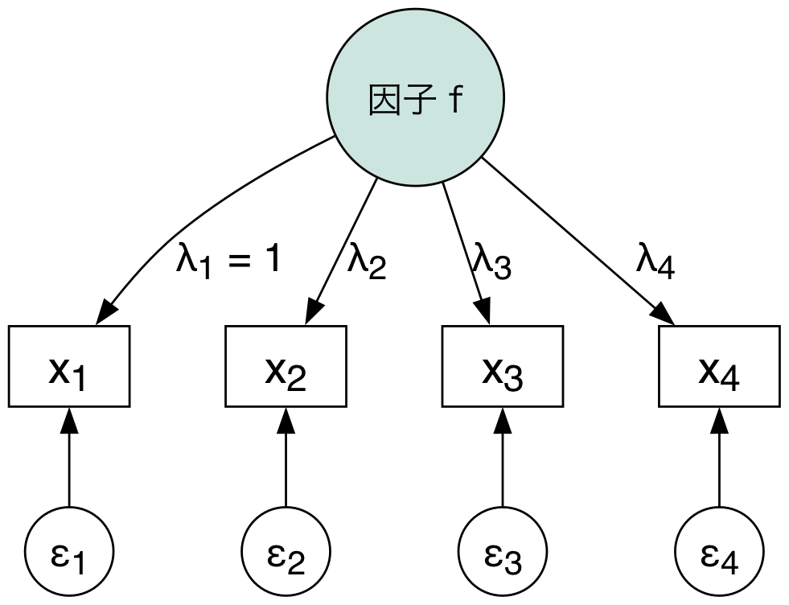
各観測変数は x_i = \lambda_i f + \varepsilon_i で, 因子の分散を \phi, 独自因子 \varepsilon_i の分散を \psi_i (プサイ) とします. 独自因子が互いに, また因子と無相関であることを使うと, 観測変数の分散と共分散は次のようにパラメータで表せます.
\begin{aligned} \mathrm{Var}(x_i) &= \lambda_i^2 \phi + \psi_i \\ \mathrm{Cov}(x_i, x_j) &= \mathrm{Cov}(\lambda_i f + \varepsilon_i,\ \lambda_j f + \varepsilon_j) = \lambda_i \lambda_j \phi \quad (i \neq j) \end{aligned}
パラメータの値を決めると, 観測変数の分散と共分散がすべて決まります. パラメータをまとめて \theta と書き, これらの分散と共分散を並べた行列を, モデルが予言する共分散行列 \Sigma(\theta) と呼びます. 対称行列なので, 下半分は省略します.
\Sigma(\theta) = \begin{pmatrix} \lambda_1^2\phi + \psi_1 & \lambda_1\lambda_2\phi & \lambda_1\lambda_3\phi & \lambda_1\lambda_4\phi \\ & \lambda_2^2\phi + \psi_2 & \lambda_2\lambda_3\phi & \lambda_2\lambda_4\phi \\ & & \lambda_3^2\phi + \psi_3 & \lambda_3\lambda_4\phi \\ & & & \lambda_4^2\phi + \psi_4 \end{pmatrix}
共分散がどのような構造を持つかをモデルで表し, データと比べることが, 共分散構造分析という名前の由来です.
パラメータに具体的な値を入れて \Sigma(\theta) を計算し, 同じモデルに従う仮想の回答者 1000 人のデータから計算した共分散行列と比べてみます.
import numpy as np
# 1 因子 4 指標のモデルのパラメータ
lam = np.array([1.0, 0.8, 0.6, 0.7]) # 因子負荷量 (1 つ目は 1 に固定)
phi = 0.5 # 因子の分散
psi = np.array([0.3, 0.4, 0.5, 0.4]) # 独自因子の分散
# モデルが予言する共分散行列
Sigma = phi * np.outer(lam, lam) + np.diag(psi)
print(Sigma.round(3))
"""
[[0.8 0.4 0.3 0.35 ]
[0.4 0.72 0.24 0.28 ]
[0.3 0.24 0.68 0.21 ]
[0.35 0.28 0.21 0.645]]
"""
# このモデルに従う仮想の回答者を 1000 人つくり, 共分散行列を計算する
rng = np.random.default_rng(0)
n = 1000
f = rng.normal(0, np.sqrt(phi), n) # 因子の値 (観測できない)
eps = rng.normal(0, np.sqrt(psi), (n, 4)) # 独自因子
X = f[:, None] * lam + eps # 観測される 4 項目
print(np.cov(X, rowvar=False).round(3))
"""
[[0.735 0.348 0.288 0.324]
[0.348 0.694 0.25 0.282]
[0.288 0.25 0.683 0.195]
[0.324 0.282 0.195 0.66 ]]
"""データから計算した共分散行列は, 標本のばらつきの分だけずれますが, モデルが予言した \Sigma(\theta) に近い値になります. SEM の推定はこの逆向きの計算です. データから共分散行列 S を計算し, \Sigma(\theta) が S にできるだけ近くなるパラメータ \theta を探します.
構造モデルのパス係数も, 同じように共分散の式に入ります. 例えば x = \lambda f + \varepsilon_x と y = \beta f + \varepsilon_y で, 誤差どうしと, 誤差と f が無相関なら,
\mathrm{Cov}(x, y) = \lambda \beta \phi
です. 因子負荷量 \lambda とパス係数 \beta が同じ \Sigma(\theta) の中に現れるので, 両方を 1 つの共分散行列から同時に推定できます.
このモデルは, 共分散の値の間に制約を課しています. 例えば \Sigma(\theta) の式から
\mathrm{Cov}(x_1, x_2)\,\mathrm{Cov}(x_3, x_4) = \mathrm{Cov}(x_1, x_3)\,\mathrm{Cov}(x_2, x_4) = \lambda_1\lambda_2\lambda_3\lambda_4\phi^2
が成り立ちます. 上の数値でも 0.4 \times 0.21 = 0.3 \times 0.28 = 0.084 です. データの共分散がこのような関係から大きく外れていれば, 「4 つの項目が 1 つの因子で説明できる」という仮説は疑わしくなります. モデルが共分散にこうした制約を課しているので, SEM はモデルがデータと矛盾するかどうかを検証できます.
識別と自由度
上のモデルのパラメータは \lambda_1, \dots, \lambda_4, \phi, \psi_1, \dots, \psi_4 の 9 個ですが, このままでは値が 1 つに決まりません. 因子 f を 2 倍の値で測り直す (分散 \phi は 4 倍になる) と同時に, すべての \lambda_i を半分にすると, \lambda_i \lambda_j \phi も \lambda_i^2 \phi も変わらないからです. 潜在変数には決まった単位がないので, 分析者が単位を決める必要があります. よく使われるのは, 潜在変数ごとに因子負荷量を 1 つだけ 1 に固定する方法です (図の \lambda_1 = 1). こうすると, 潜在変数の単位はその観測変数の単位に揃います. パラメータの値が 1 つに決まることを, モデルが識別されるといいます. 単位の固定は識別に必要な条件ですが, それだけで識別されるとは限りません. 例えば 1 つの因子に観測変数が 2 つしかないモデルは, 単位を固定しても値が 1 つに決まりません.
観測変数が p 個あるとき, データから得られる分散と共分散は p(p+1)/2 個です. 推定するパラメータの数を q とすると,
\text{自由度} = \frac{p(p+1)}{2} - q
がモデルの自由度です. 上の例では p = 4 なので分散と共分散は 10 個あり, \lambda_1 = 1 と固定すると推定するパラメータは 8 個なので, 自由度は 2 です. 自由度は, モデルが共分散に課している制約の数にあたります. 自由度が負のモデルは, パラメータの値が 1 つに決まりません. 自由度が 0 以上であることは識別の必要条件であって, 十分条件ではありません. 識別されていて自由度が 0 のモデルは, 通常データの共分散行列を完全に再現するので, 適合度でモデルを検証することはできません.
推定の方法
推定では, S と \Sigma(\theta) の食い違いを測る関数を決め, その値が最小になる \theta を探します. 最もよく使われるのは最尤法で, 観測変数が多変量正規分布に従うと仮定し, 食い違いを次の関数で測ります.
F_{\mathrm{ML}}(\theta) = \log|\Sigma(\theta)| + \mathrm{tr}\left(S\,\Sigma(\theta)^{-1}\right) - \log|S| - p
|\cdot| は行列式, \mathrm{tr} は対角成分の和を表します. 式の細部を覚える必要はありませんが, \Sigma(\theta) = S のときに 0 になり, 食い違いが大きいほど大きくなる量だということは押さえておいてください. 最小値 F_{\min} にデータ数 N (ソフトウェアによっては N - 1) をかけた値が, 次の節で説明する \chi^2 統計量です.
本章のデータの 5 段階評価や, チェックした選択肢の個数は, 正規分布の仮定から外れます. 選択肢が 5 つ以上あり, 分布の偏りが大きくなければ, 推定値への影響は比較的小さいとされています. ただし \chi^2 統計量や p 値は不正確になりやすいため, 研究で使うときは順序尺度向けの推定法や頑健な補正も検討します.
適合度の読み方
推定したモデルがデータにどれだけ合っているかを表す指標を適合度指標といいます. 1 つの指標だけで判断せず, 複数の指標を合わせて評価します.
| 評価指標 | 何を測るか | 目安 |
|---|---|---|
| カイ二乗検定 (\chi^2) | 「モデルが予言する共分散行列は母集団の共分散行列に一致する」を帰無仮説とする検定. 統計量は N F_{\min} で, 自由度はモデルの自由度 | p 値 > 0.05 (モデルが棄却されない) |
| RMSEA (Root Mean Square Error of Approximation) | 自由度 1 あたりの食い違いの大きさ. \sqrt{\max(\chi^2 - df,\ 0) / (df\,(N-1))} | 0.05 以下で良い, 0.08 以下で許容範囲, 0.1 以上で悪い |
| SRMR (Standardized Root Mean Square Residual) | S と \Sigma(\hat\theta) の差を相関の尺度にした残差の, 二乗平均の平方根 | 0.08 以下 |
| CFI (Comparative Fit Index) | すべての観測変数が無相関だとする独立モデルと比べて, 食い違いがどれだけ減ったか | 0.95 以上で良い, 0.90 以上で可 |
| TLI (Tucker-Lewis Index) | CFI と同じ比較を自由度 1 あたりの食い違いで行い, パラメータの多いモデルを割り引いたもの | 0.95 以上で良い, 0.90 以上で可 |
| GFI (Goodness of Fit Index) | データの分散と共分散のうち, モデルが再現できた割合 (ただし semopy 2.3 の出力は NFI と同じ式で計算されている) |
0.95 以上で良い, 0.90 以上で可 |
| AGFI (Adjusted GFI) | GFI をパラメータの数で補正したもの | 0.95 以上で良い, 0.90 以上で可 |
| NFI (Normed Fit Index) | 独立モデルと比べて \chi^2 がどれだけ減ったかの割合 | 0.95 以上で良い, 0.90 以上で可 |
\chi^2 検定は, モデルが母集団に完全に合っているかを調べる検定です. データ数が多いと, 母集団での実質的に問題にならない小さな食い違いでも検出して棄却します. そのため, 食い違いの大きさを RMSEA, SRMR, CFI などでも評価します. GFI と AGFI はデータ数やモデルの大きさの影響を受けやすいため, 最近は \chi^2, RMSEA, SRMR, CFI (TLI) を報告することが多くなっています. semopy 2.3 は GFI を NFI と同じ式で計算していて, 出力の GFI と NFI は常に同じ値になるので, 本章では判断材料に使いません. なお, 目安の値は慣習であり, 目安を満たせば正しいモデルだと保証されるわけではありません.
SEM で確かめられること
SEM が確かめるのは, 仮定したモデルとデータが矛盾しないかどうかです. 適合度が良くても, モデルが正しいことや, 矢印の向きの因果関係があることの証明にはなりません. 1 時点の調査 (横断データ) では, 矢印の向きを逆にしたモデルがまったく同じ適合度になることがあります (同値モデル). 矢印の向きは, 理論や, 時間の前後関係がわかる調査設計で根拠づける必要があります.
アンケートデータによる実践
それでは, アンケートデータを利用して SEM を実際に行ってみましょう. 今回は以下のパス図で表されるモデルを検証します.
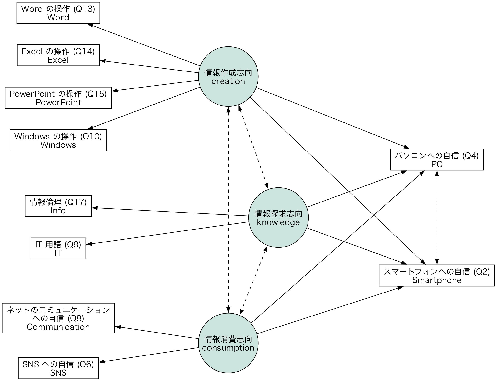
今回はあくまで仮想データを利用した練習なので, このモデルは深く考えられたものではありませんが, 実際に SEM を利用する場合には事前に仮説を立てて, アンケートの質問の設計自体を仮説が検証できるような形にしておく必要があります.
このモデルでは, 次の 3 つの潜在変数が, パソコンとスマートフォンに対する自信に影響すると考えます.
- 情報作成志向 (creation): Word, Excel, PowerPoint, Windows の操作のうち, 身に付いているものの個数から測ります.
- 情報探求志向 (knowledge): 情報倫理の事柄のうち身に付いているものの個数と, 知っている IT 用語の個数から測ります.
- 情報消費志向 (consumption): ネットを使ったコミュニケーションと SNS に対する自信 (5 段階) から測ります.
質問が直接尋ねているのは技能や知識や自信であり, 「志向」は練習のために付けた仮の名前です. これらの質問が本当に志向を測っているかは, 別に検討する必要があります.
パソコンへの自信とスマートフォンへの自信は, 3 つの志向以外の共通の要因 (例えば, 自分の能力を評価するときの甘さや厳しさ) の影響も受けると考えられます. そこで, 2 つの誤差 \varepsilon の間に共分散を置きます. 3 つの潜在変数の間の共分散は, semopy が既定で推定します. 図では独自因子と誤差を省略しています.
Python では, 共分散構造分析用のライブラリ semopy を利用して SEM を実施できます.
semopy では, モデルを文字列で指定します. 潜在変数, 影響の向きのある関係, 共分散は, 記号を用いてそれぞれ以下のように表現されます.
- 測定モデル (潜在変数の定義)
潜在変数 =~ 観測変数1 + 観測変数2 + ...
- 構造モデル (影響の向きのある関係)
目的変数 ~ 説明変数1 + 説明変数2 + ...
- 共分散 (向きを仮定しない関係)
変数 ~~ 変数
目的変数どうしを ~~ で結ぶと, それらの誤差 \varepsilon の共分散を推定します.
それでは, モデルを構築し, 実際のデータで検証してみましょう. 観測変数には, チェックした選択肢の個数と 5 段階評価が混ざっていて単位が揃っていないので, 標準化しておきます. ただし, 観測変数を標準化しても潜在変数の分散は 1 にならないので, 係数の大きさを比べるときには後で説明する標準化推定値を使います.
#共分散構造分析
#------------------------------------------------------------------
#変数間の関係の仮説をモデルにして, データと矛盾しないかを確かめる.
import semopy
from semopy import Model
#データ型の変換 (すべて float でないといけない)
df_sem = df[num_columns].astype('float64')
#標準化する
df_sem = (df_sem - df_sem.mean()) / df_sem.std(ddof=0)
#わかりにくいから名前を変える
df_sem.rename({'Q2_num':'Smartphone'
,'Q4_num':'PC'
,'Q13_num':'Word'
,'Q14_num':'Excel'
,'Q15_num':'PowerPoint'
,'Q10_num':'Windows'
,'Q17_num':'Info'
,'Q9_num':'IT'
,'Q8_num':'Communication'
,'Q6_num':'SNS'}
,inplace=True
,axis='columns')
# 仮説 (文字列で指定する)
desc = '''
# (測定モデル) 潜在変数 =~ 観測変数
creation =~ Word + Excel + PowerPoint + Windows
knowledge =~ Info + IT
consumption =~ Communication + SNS
# (構造モデル) 目的変数 ~ 説明変数
PC ~ creation + knowledge + consumption
Smartphone ~ creation + knowledge + consumption
# (誤差の共分散) 変数 ~~ 変数
PC ~~ Smartphone
'''
# モデルを用意して推定する
mod = Model(desc)
res = mod.fit(df_sem)
print(res)
"""
Name of objective: MLW
Optimization method: SLSQP
Optimization successful.
Optimization terminated successfully
Objective value: 0.254
Number of iterations: 43
Params: 0.959 0.808 0.907 1.276 1.054 0.244 0.495 0.273 -0.102 0.341 0.800 0.144 0.645 0.365 0.290 0.371 0.614 0.496 0.295 0.525 0.364 0.228 0.635 0.134 0.772 0.152 0.462 0.386
"""
# 推定されたパラメータの一覧 (std_est=True で標準化推定値の列が付く)
estimates = mod.inspect(std_est=True)
print(estimates[['lval', 'op', 'rval', 'Estimate', 'Est. Std', 'p-value']])
"""
lval op rval Estimate Est. Std p-value
0 Word ~ creation 1.000000 0.878675 -
1 Excel ~ creation 0.959228 0.842957 0.0
2 PowerPoint ~ creation 0.808264 0.710333 0.0
3 Windows ~ creation 0.907300 0.797326 0.0
4 Info ~ knowledge 1.000000 0.621641 -
5 IT ~ knowledge 1.276020 0.793006 0.0
6 Communication ~ consumption 1.000000 0.796807 -
7 SNS ~ consumption 1.054072 0.839821 0.0
8 PC ~ creation 0.243879 0.214321 0.002827
9 PC ~ knowledge 0.494677 0.307485 0.000087
10 PC ~ consumption 0.272566 0.217144 0.0
11 Smartphone ~ creation -0.101796 -0.089464 0.182332
12 Smartphone ~ knowledge 0.340858 0.211889 0.003632
13 Smartphone ~ consumption 0.799502 0.636981 0.0
14 consumption ~~ consumption 0.634833 1.000000 0.0
15 consumption ~~ knowledge 0.133671 0.269868 0.0
16 creation ~~ creation 0.772483 1.000000 0.0
17 creation ~~ consumption 0.151833 0.216817 0.0
18 creation ~~ knowledge 0.462311 0.846120 0.0
19 knowledge ~~ knowledge 0.386469 1.000000 0.0
20 PC ~~ Smartphone 0.143877 0.143851 0.0
21 PC ~~ PC 0.644794 0.644631 0.0
22 Communication ~~ Communication 0.365059 0.365098 0.0
23 Excel ~~ Excel 0.289505 0.289424 0.0
24 IT ~~ IT 0.371377 0.371141 0.0
25 Info ~~ Info 0.613612 0.613562 0.0
26 PowerPoint ~~ PowerPoint 0.495509 0.495427 0.0
27 SNS ~~ SNS 0.294719 0.294701 0.0
28 Smartphone ~~ Smartphone 0.525353 0.525298 0.0
29 Windows ~~ Windows 0.364371 0.364271 0.0
30 Word ~~ Word 0.228052 0.227930 0.0
"""
# 適合度の指標 (本章で説明した指標だけを表示する)
cols = ['DoF', 'chi2', 'chi2 p-value', 'CFI', 'TLI', 'RMSEA']
fit_stats = semopy.calc_stats(mod)
print(fit_stats.T.loc[cols])
"""
Value
DoF 27.000000
chi2 343.794134
chi2 p-value 0.000000
CFI 0.951725
TLI 0.919542
RMSEA 0.093192
"""
#パス図を描く (標準化推定値を表示する)
#plot_covs=True で共分散も表示する
semopy.semplot(mod
,dir_fig + 'SEM.png'
,plot_covs=True
,std_ests=True
,engine='dot')print(res) の Objective value: 0.254 は, 最小化した食い違い F_{\min} です. これにデータ数 1352 をかけた 0.254 \times 1352 \approx 343.8 が, 適合度の表の chi2 になっています. なお, p 値の 0.0 は p 値がちょうど 0 という意味ではなく, 表示できる桁より小さいことを表します.
パラメータの一覧の読み方
inspect() の出力は, パラメータ 1 つにつき 1 行です. semopy は測定モデルの行を 観測変数 ~ 潜在変数 の形で表示します.
- 0〜7 行目 (
観測変数 ~ 潜在変数): 測定モデルの因子負荷量 \lambda です.Estimateが 1 で p 値が-の行は, 識別のために 1 に固定した因子負荷量です. - 8〜13 行目 (
PC ~ ...とSmartphone ~ ...): 構造モデルのパス係数 \beta です. - 左右が異なる
~~の行 (15, 17, 18, 20 行目): 潜在変数どうしの共分散と, PC と Smartphone の誤差 \varepsilon の共分散です. - 左右が同じ
~~の行: 分散です. 潜在変数の行 (14, 16, 19 行目) は潜在変数の分散 \phi, 観測変数の行は独自因子 \varepsilon の分散です. PC と Smartphone の行は誤差 \varepsilon の分散です.
推定するパラメータは, 固定していない因子負荷量 5 個, パス係数 6 個, 潜在変数の分散と共分散 6 個, 観測変数の独自因子と誤差の分散 10 個, PC と Smartphone の誤差の共分散 1 個の計 28 個です. 観測変数は 10 個なので分散と共分散は 10 \times 11 / 2 = 55 個あり, 自由度は 55 - 28 = 27 となって, 出力の DoF と一致します.
Estimate は, 観測変数の単位で表した推定値 (非標準化推定値) です. 観測変数は標準化してありますが, 潜在変数の単位は 1 に固定した観測変数の単位に揃えただけなので, 分散は 1 になっていません. 例えば IT の因子負荷量 Estimate は 1.276 で, 1 を超えています. Est. Std は潜在変数も含めたすべての変数の分散を 1 に揃えたときの推定値 (標準化推定値) で, 係数の大きさを比べるときにはこちらを使います.
このモデルでは各観測変数が 1 つの潜在変数だけにつながっているので, 標準化した因子負荷量の二乗が共通性にあたります (Word なら 0.879^2 \approx 0.77). 後で扱う修正モデルの Windows のように 2 つの潜在変数につながる場合は, 潜在変数どうしの相関も含めて計算する必要があり, 負荷量の二乗の和にはなりません. PC の行の 0.645 は PC の分散のうち 3 つの志向で説明できなかった割合で, 3 つの志向は PC への自信のばらつきの約 35% を説明しています.
結果の解釈
semopy.semplot() で描いたパス図は次のようになります. 矢印に付いた数値は標準化推定値です.
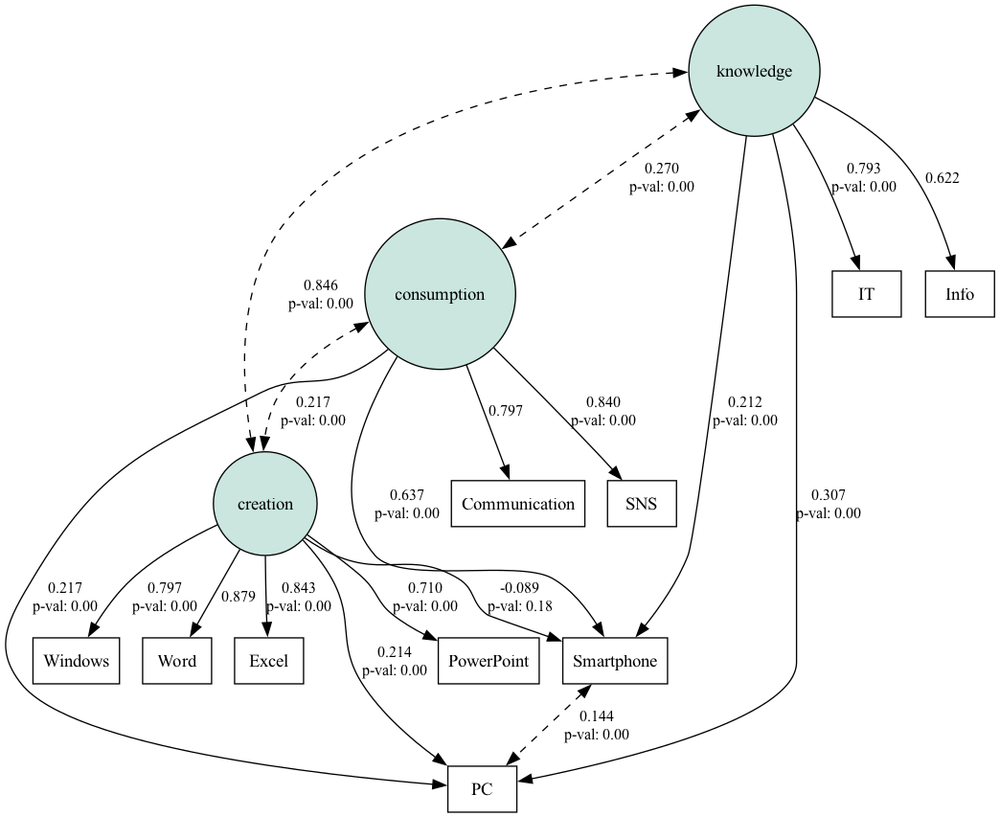
測定モデルの標準化した因子負荷量は 0.62〜0.88 です. 自由に推定した 5 個の因子負荷量はいずれも有意で, 残る 3 個は単位を決めるために 1 に固定したので有意性を検定していません. 各観測変数は, 同じ潜在変数につながる他の観測変数と強く関係しています.
構造モデルでは, パソコンへの自信に対して, 情報探求志向 (0.31), 情報消費志向 (0.22), 情報作成志向 (0.21) の順に影響が大きく, いずれも有意です. スマートフォンへの自信には情報消費志向の影響が最も大きく (0.64), 情報探求志向 (0.21) が続きます. 情報作成志向からスマートフォンへのパス (-0.09) は有意ではありません (p = 0.18).
適合度は判断が分かれます. \chi^2 検定では, モデルが完全に合っているという仮説が棄却されています (\chi^2(27) = 343.8, p < 0.001). データ数が 1352 と多いので小さな食い違いも検出されやすく, 回答が正規分布に従わない影響もあるので, 食い違いの大きさを他の指標で確かめます. CFI (0.952) は目安の 0.95 を上回り, 後で計算する SRMR (0.040) も目安の範囲内です. 一方で, RMSEA (0.093) は許容範囲の 0.08 を超え, TLI (0.920) も 0.95 に届いていません. したがって, このモデルは大きく外れてはいないものの, データに合っていない部分を含んでいます.
残差からモデルの合わない箇所を探す
モデルのどこがデータに合っていないかは, データの共分散行列 S と, モデルが予言した共分散行列 \Sigma(\hat\theta) の差 (残差) を見るとわかります. 残差を相関の尺度に揃えておくと, 変数の組どうしで大きさを比べられます. 残差の二乗平均の平方根が, 適合度の表の SRMR です (semopy.calc_stats() は SRMR を出力しないので, ここで計算します).
#残差を確かめる
#------------------------------------------------------------------
#データの共分散行列とモデルが予言した共分散行列の差を, 相関の尺度で見る
import numpy as np
obs = mod.vars['observed'] # モデルに含まれる観測変数
S = np.cov(df_sem[obs].values, rowvar=False, bias=True) # データの共分散行列
Sigma = mod.calc_sigma()[0] # モデルが予言した共分散行列
sd = np.sqrt(np.diag(S))
resid = pd.DataFrame((S - Sigma) / np.outer(sd, sd), index=obs, columns=obs)
print(resid.round(2))
"""
Communication Excel IT Info PC PowerPoint SNS Smartphone Windows Word
Communication 0.00 -0.03 0.03 0.07 0.02 0.06 0.00 -0.00 0.09 0.02
Excel -0.03 -0.00 0.01 -0.04 -0.02 -0.03 -0.08 -0.06 -0.04 0.03
IT 0.03 0.01 -0.00 -0.00 0.01 -0.07 -0.05 -0.00 0.09 -0.04
Info 0.07 -0.04 -0.00 -0.00 -0.03 0.06 0.01 0.01 0.08 -0.03
PC 0.02 -0.02 0.01 -0.03 -0.00 -0.05 -0.01 -0.00 0.11 -0.03
PowerPoint 0.06 -0.03 -0.07 0.06 -0.05 -0.00 0.02 0.01 0.02 0.02
SNS 0.00 -0.08 -0.05 0.01 -0.01 0.02 -0.00 0.00 0.03 -0.01
Smartphone -0.00 -0.06 -0.00 0.01 -0.00 0.01 0.00 -0.00 0.09 -0.01
Windows 0.09 -0.04 0.09 0.08 0.11 0.02 0.03 0.09 -0.00 -0.03
Word 0.02 0.03 -0.04 -0.03 -0.03 0.02 -0.01 -0.01 -0.03 -0.00
"""
#SRMR (残差の二乗平均の平方根. 対角と下三角の要素を使う)
srmr = np.sqrt((resid.values[np.tril_indices(len(obs))] ** 2).mean())
print('SRMR:', srmr)
"""
SRMR: 0.04042660130885509
"""残差が正の組は, データでの関係がモデルの予言より強い組です. Windows の行が目立ち, PC (0.11), IT (0.09), Smartphone (0.09), Communication (0.09), Info (0.08) との残差が大きくなっています. モデルでは Windows を情報作成志向だけにつないでいますが, データの Windows は IT 用語や情報倫理とも, モデルが説明できる以上に強く関係しています.
Windows の設問の選択肢には, ファイルの検索やコピー, ファイルサイズの確認, ZIP ファイルの展開など, パソコンの基本的な仕組みに関わる操作が多く含まれます. IT 用語の設問にも「OS」「拡張子」「CPU」などがあるので, Windows の操作は IT 用語や情報倫理の知識とも共通する部分を持つと考えられます. そこで, Windows を情報探求志向にも結びつけたモデルを推定してみます. 残差の大きい箇所を直す方法は他にもあり, これは候補の 1 つです.
#修正したモデル
#------------------------------------------------------------------
desc2 = '''
creation =~ Word + Excel + PowerPoint + Windows
knowledge =~ Info + IT + Windows
consumption =~ Communication + SNS
PC ~ creation + knowledge + consumption
Smartphone ~ creation + knowledge + consumption
PC ~~ Smartphone
'''
mod2 = Model(desc2)
mod2.fit(df_sem)
estimates2 = mod2.inspect(std_est=True)
print(estimates2[['lval', 'op', 'rval', 'Estimate', 'Est. Std', 'p-value']])
"""
lval op rval Estimate Est. Std p-value
0 Word ~ creation 1.000000 0.902817 -
1 Excel ~ creation 0.943159 0.851513 0.0
2 PowerPoint ~ creation 0.787335 0.710805 0.0
3 Windows ~ creation 0.226744 0.204725 0.000354
4 Windows ~ knowledge 1.106513 0.670206 0.0
5 Info ~ knowledge 1.000000 0.605709 -
6 IT ~ knowledge 1.255615 0.760449 0.0
7 Communication ~ consumption 1.000000 0.797009 -
8 SNS ~ consumption 1.053600 0.839756 0.0
9 PC ~ creation 0.001609 0.001452 0.981641
10 PC ~ knowledge 0.890435 0.539311 0.0
11 PC ~ consumption 0.239828 0.191169 0.0
12 Smartphone ~ creation -0.168782 -0.152384 0.007119
13 Smartphone ~ knowledge 0.458509 0.277699 0.000006
14 Smartphone ~ consumption 0.783506 0.624525 0.0
15 consumption ~~ consumption 0.635361 1.000000 0.0
16 creation ~~ creation 0.815135 1.000000 0.0
17 creation ~~ consumption 0.139921 0.194428 0.0
18 knowledge ~~ knowledge 0.366825 1.000000 0.0
19 knowledge ~~ consumption 0.138980 0.287881 0.0
20 knowledge ~~ creation 0.448629 0.820432 0.0
21 PC ~~ Smartphone 0.125249 0.125250 0.0
22 PC ~~ PC 0.611823 0.611842 0.0
23 Communication ~~ Communication 0.364856 0.364777 0.0
24 Excel ~~ Excel 0.274935 0.274925 0.0
25 IT ~~ IT 0.421749 0.421717 0.0
26 Info ~~ Info 0.633018 0.633117 0.0
27 PowerPoint ~~ PowerPoint 0.494811 0.494757 0.0
28 SNS ~~ SNS 0.294856 0.294811 0.0
29 Smartphone ~~ Smartphone 0.516227 0.516219 0.0
30 Windows ~~ Windows 0.283743 0.283772 0.0
31 Word ~~ Word 0.184933 0.184921 0.0
"""
print(semopy.calc_stats(mod2).T.loc[cols])
"""
Value
DoF 26.000000
chi2 174.089440
chi2 p-value 0.000000
CFI 0.977433
TLI 0.960942
RMSEA 0.064930
"""
semopy.semplot(mod2
,dir_fig + 'SEM2.png'
,plot_covs=True
,std_ests=True
,engine='dot')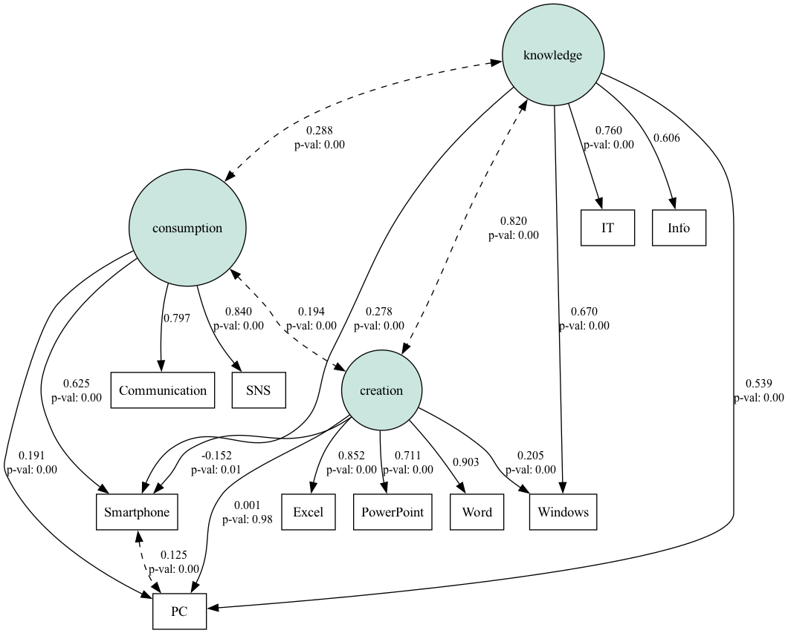
パラメータが 1 つ増えたので, 自由度は 26 になりました. 適合度は, CFI が 0.952 から 0.977 へ, TLI が 0.920 から 0.961 へ, RMSEA が 0.093 から 0.065 へ改善し, いずれも目安を満たしています (SRMR は同じ計算で 0.028 です). \chi^2 検定は依然として棄却されるので, 完全に合ったモデルではありません.
修正によって, 構造モデルの結論も変わりました. 最初のモデルでは情報作成志向からパソコンへの自信へのパスが有意 (0.21) でしたが, 修正したモデルでは 0.00 (p = 0.98) になり, パソコンへの自信は主に情報探求志向 (0.54) で説明されるようになりました. これは影響が 0 だと証明されたのではなく, 0 と区別できる証拠が得られなかったということです. 交差させた 1 本の矢印を足すと, 測定モデルと構造モデルのパラメータがまとめて推定し直されます. この係数の値は, Windows をどの潜在変数の観測変数とするかに大きく左右されます. 最初のモデルは, Windows と情報探求志向の関係を, 情報作成志向の因子負荷量やパス係数で補っていた可能性があります.
また, スマートフォンへの自信に対する情報作成志向のパスは -0.15 で, 有意な負の値になりました. 情報作成志向と情報探求志向の相関は 0.82 と高く, 2 つを同時に説明変数に入れると, 第5章で扱った多重共線性と同じ問題が起こります. 係数は「情報探求志向と情報消費志向が同じ学生どうしで比べたときの関係」を表すので, 「Office の操作ができる学生ほどスマートフォンに自信がない」と読むことはできません. 説明変数どうしの相関が高いことだけでは負の符号の理由は決まりませんが, 相関の高い変数を同時に入れると, 係数の符号や大きさは不安定になりやすくなります.
データを見てモデルを修正するときは, 次の 2 点を守ります.
- 同じデータで評価した適合度は甘くなる: 修正後のモデルは, 修正に使ったデータにたまたま合う方向へ変えられています. 修正したモデルは, 修正に使っていないデータで確かめます. 分析の前にデータを探索用と検証用に分けておき, 検証用はモデルの修正に使わないようにします. 本章のように全データを修正に使った場合は, 新しい調査などで確かめます.
- 修正には理論的な理由が要る: 残差が大きい箇所に矢印を足し続ければ適合度はいくらでも上がりますが, 意味のないモデルになります. 今回は, Windows の選択肢の内容という, 数値以外の理由で修正しました.
semopy以外のソフトウェアでは, 0 に固定していたパラメータを 1 つ自由にしたときの \chi^2 の減少量の見込み (修正指数) を出力して, 修正の候補を示すものもあります.
同じデータでも, モデルの立て方によって「何が何に影響するか」の結論は変わります. SEM の結果を報告するときは, 最終的なモデルだけでなく, どのような仮説から出発し, どのような理由でモデルを修正したかも合わせて示すことが大切です.